1 Abstract
DigiPPPiP extends Partner Pen Play in Parallel (PPPiP) from a co-present paper practice into a reproducible framework for cyberphysical, remote, semisynchronous, asynchronous, accessible, and place-responsive dyadic drawing (Mikhailova and Friedman 2018). The framework is positioned within collaborative-work studies of shared drawing surfaces (Tang 1991), cyber-physical-social systems (Sobb et al. 2023), mediated embodiment and presence (Biocca 1997; Lee 2004), digital intimacy technologies (Hassenzahl et al. 2012; Neustaedter and Greenberg 2012), and cautious hyperscanning methodology (Czeszumski et al. 2020; Hamilton 2021).
The manuscript translates the project brief into a modular research artifact: 9 temporal-spatial modalities, 13 evidence dimensions, 6 planned outcome measures, and 39 conceptual figures are generated or registered by the project code rather than hand-maintained prose. The computational layer is explicitly illustrative, not empirical: the active-inference, inter-brain-synchrony, Forman-Ricci, narrative-information, source-quality, accessibility, and neuroergonomic outputs are deterministic conceptual models designed to make theoretical commitments inspectable. Formal equations are consolidated in sec. 19 so the main line can state evidence boundaries before presenting mathematical detail.
The argument is that DigiPPPiP should be treated as human-human relational technology. Its irreducible design kernel is modest: two partners, a shared mark field, perceptible traces of agency, a temporal relation among contributions, and consentful control over persistence. Digital infrastructure expands the substrate of shared mark-making without replacing the second-person, embodied, narrative, and affective conditions that make the practice relationally meaningful (Schilbach et al. 2013; Lehmann et al. 2024; Vaisvaser et al. 2024). The manuscript explicitly avoids claims that DigiPPPiP is clinically therapeutic, universally accessible, or causally validated by neural synchrony; those remain empirical questions for controlled studies. Cross-references use Pandoc labels, so sections, equations, figures, and tables remain automatically numbered across PDF and web render targets.
2 Introduction: From Shared Marks to Study-Ready Infrastructure
The original PPPiP paper defined a simple dyadic practice: two partners draw simultaneously on one shared sheet, treating improvised mark-making as a non-clinical, low-cost, relational exercise (Mikhailova and Friedman 2018). Couple joint-drawing research also gives the manuscript a more direct arts-therapy precedent for reading connectedness and individuality through shared image-making (Snir and Wiseman 2013). Its theoretical value came from the convergence of art therapy, partner improvisation, controlled novelty, interpersonal neural synchrony, and the Free Energy Principle (Friston 2010). DigiPPPiP keeps that foundation but asks what changes when the shared surface becomes a tablet, networked canvas, augmented paper, persistent whiteboard, or place-responsive archive.
The CSCW lineage matters because shared drawing surfaces have long been more than image-output devices, and computer-supported cooperative work (CSCW) supplies the analytic vocabulary for treating a shared surface as an interaction scene rather than a delivery channel. Observational work on collaborative drawing showed that gestures, spatial orientation, drawing process, and the common workspace all carry information that the finished drawing alone does not capture (Tang 1991). ClearBoard made the same point technologically by integrating interpersonal space with a shared drawing workspace, using gaze and gesture as part of the collaborative medium rather than as side channels (Ishii et al. 1993). Social translucence and workspace-awareness research then name the design obligation: a system should make relevant partner activity visible enough to support awareness and accountability while avoiding indiscriminate exposure (Erickson and Kellogg 2000; Gutwin and Greenberg 2002). DigiPPPiP therefore treats the canvas as an interaction scene: marks, pauses, attention shifts, access controls, and return visits are part of the relational event. This positioning prevents a novelty overclaim. The contribution is not that digital co-drawing exists, but that PPPiP can be reframed as a reproducible, partner-centered research program for studying how shared marks mediate relational attention.
From first principles, the framework has fewer hard requirements than a typical app description implies. It requires participating agents who can affect a shared surface; a trace that both partners can perceive, interpret, or revisit; enough temporal structure to distinguish simultaneous, alternating, and delayed action; and governance over who can save, replay, export, or erase the artifact. Tablets, augmented reality (AR) overlays, machine-learning prompts, physiological sensors, and cloud archives are optional implementations, not constitutive requirements. This distinction matters because DigiPPPiP should not optimize for digital sophistication when the function to preserve is reciprocal attention through marks.
The project brief motivates a successor framework with cyberphysical, temporal, active-inference, neuroergonomic, cyber-phenomenological, accessibility, relational-aesthetic, place-based, and dyadic digital-health dimensions. The evidence graph in fig. 1 formalizes those dimensions as a lineage from the original PPPiP domains into the present framework. The graph currently covers 5 source domains and 13 DigiPPPiP dimensions with 100 percent citation coverage.
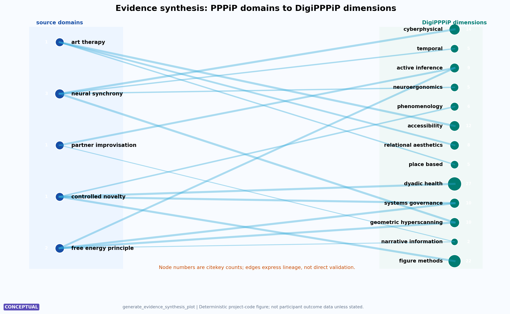
generate_evidence_synthesis_plot() from the
citation-bearing graph in src/evidence.py; read left nodes
as source domains, right nodes as framework dimensions, node numbers as
citekey counts, and link weight as lineage density supporting the
introduction’s scope argument. It is conceptual rather than empirical,
and stronger claims would require direct comparative studies within each
dimension.DigiPPPiP is therefore a framework for designing and studying intentional shared drawing across substrates. It is not a claim that every digital canvas is therapeutic, nor that any synthetic model here measures a real couple. A weak implementation would merely connect users to drawing software; a stronger implementation would preserve agency, mutual visibility, access, privacy, and interpretive openness. The manuscript uses computational primitives to keep conceptual claims explicit and testable: fig. 2 shows the conceptual expansion, fig. 3 maps the actors and artifacts, sec. 11 defines the design space, sec. 5 states the modeling lens, sec. 19 keeps the formal primitives inspectable, sec. 13 specifies what future studies must log and govern, and sec. 14 names the empirical work required before intervention claims would be justified.
Reader route map: substrate, temporal coordination, and taxonomy sections define what counts as a DigiPPPiP condition; the modeling, neuroergonomic, phenomenological, accessibility, aesthetic, and place sections explain how the condition can be interpreted without treating interpretation as evidence; the digital-health section sets the dyadic ethics boundary; the methods protocol specifies source verification, figure provenance, participant-facing controls, and validation gates; the agenda and discussion sections state what evidence would strengthen or falsify the framework. The route is intentionally ordered from theory to protocol to limits, with the formal appendix separated so equations and diagnostic figures do not outrun the human-human claim.
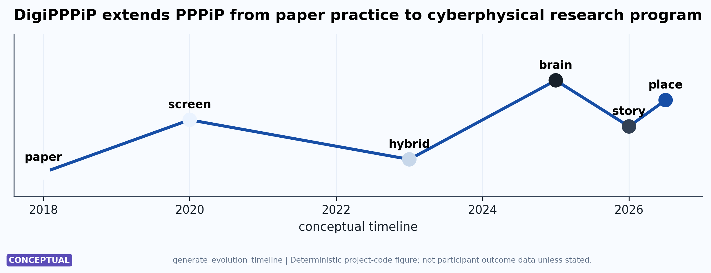
generate_evolution_timeline(); read
the connected markers as staged additions of substrate, hybrid
interaction, neural measurement, narrative analysis, and place
responsiveness. It supports the introduction’s claim that DigiPPPiP is
an organized expansion, not an adoption history or outcome trend;
empirical chronology would require archival or deployment
data.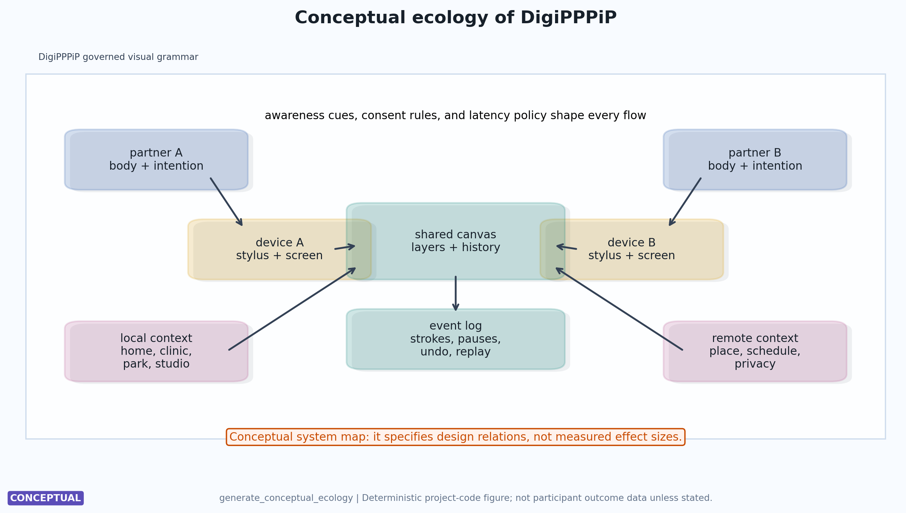
generate_conceptual_ecology(); blue actor boxes, green
artifact boxes, orange signal boxes, and purple context boxes show how
partner agency flows through the shared surface. It supports the
introduction’s design-kernel argument and remains conceptual until
instrumented sessions test these dependencies.3 Cyberphysical Substrate: Canvas, Body, Archive
Cyberphysical DigiPPPiP treats the “paper” in PPPiP as a variable substrate rather than a fixed object. Pen-and-paper remains the haptic baseline, but shared tablets, web canvases, augmented reality (AR) overlays, virtual reality (VR) drawing spaces, smart paper, and persistent whiteboards all create different couplings among gesture, mark, archive, and partner response. Cyber-physical-social systems (CPSS) research is useful because it keeps physical, cyber, and social layers in one analytic frame rather than reducing the system to a device or app (Sobb et al. 2023). Collaborative-work studies add a second discipline: the drawing surface must preserve the interactional value of gestures, spatial relations, and work-in-progress marks, not only the final image (Tang 1991; Ishii et al. 1993).
That design discipline is stronger when the canvas is treated as a shared-workspace system rather than as a drawing file with two accounts. Workspace awareness asks what each partner can know about the other’s location, action, intention, and change history in the shared field (Gutwin and Greenberg 2002). Social translucence asks whether that visibility supports social coordination and accountability without becoming total visibility (Erickson and Kellogg 2000). Collaborative tabletop research adds a spatial constraint: people create personal, group, and storage territories even when the work surface is shared, so the canvas should support mutual access without erasing ownership, reach, and turn structure (Scott et al. 2004). DigiPPPiP should therefore expose partner activity at the granularity needed for response: live strokes, recent changes, viewport differences, consent state, and replay availability. It should not expose hidden drafts, every hesitation, device telemetry, or physiological streams by default.
Digital drawing should therefore be evaluated by affordance fit rather than by whether it perfectly imitates paper. Context-sensitive pen-tablet systems show that drawing can become more natural when software is aware of the relation among hand, pen, and surface (Sun et al. 2011). Remote co-design work likewise shows that shared digital sketching can support collaborative understanding even when the expressive qualities of paper remain distinctive (Close et al. 2024). Creativity-support and collaborative-visual-analytics scholarship adds a methods lesson: tools should support exploration, annotation, provenance, shared context, and recoverable interpretation rather than only faster production (Shneiderman 2007; Heer and Agrawala 2008). Co-creative drawing workflow research adds an important boundary for artificial intelligence (AI) enhancements: computational systems can observe, model, and prompt creative processes, but they should be evaluated by how they support human authorship and shared interpretation (Jansen and Sklar 2021). DigiPPPiP extends these design lessons into intimate and domestic contexts where low friction, privacy, ambiguity, and ritual may matter as much as precision.
fig. 4 maps DigiPPPiP as a cyber-physical-social system with explicit architecture lanes rather than a generic app stack. The default lane is the human-human drawing loop: one partner acts, the shared surface changes, the other partner responds, and both partners retain archive-control agency. Instrumentation, modeling, optional AI support, and publication governance are adjacent branches. They can make the practice more study-ready, but they are not allowed to become the practice itself. This diagram is therefore also a non-claim statement: it describes boundaries, data movement, and stop conditions; it does not claim that the architecture improves relationships, reduces distress, or identifies a cognitive mechanism.
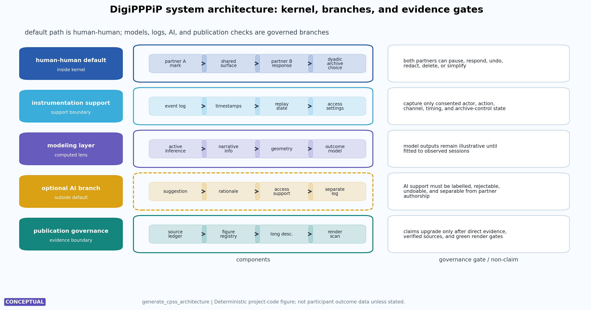
generate_cpss_architecture()
from src/systems_governance.py; read the left badges as
boundary status, the middle blocks as components, and the right boxes as
governance gates or non-claims. It supports the cyberphysical argument
that system boundaries must be explicit before features are interpreted.
The diagram is conceptual, and validation would require observing how
real interface changes affect partner behavior, consent, access, and
archive control.fig. 5 positions the modes as affordance trade-offs rather than replacements. Physical-only PPPiP preserves haptic richness and place grounding. Remote digital modes extend geographic reach and accessibility. Hybrid modes are especially important because they let one partner keep a material surface while the shared artifact remains digitally visible, versioned, and transportable.
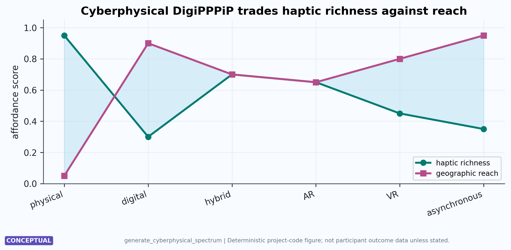
generate_cyberphysical_spectrum(); read the green and
purple lines as contrasting affordances for haptic richness and
geographic reach, with the filled area marking trade-off space. The plot
supports modality selection, not superiority claims; measured user
outcomes would be needed to calibrate the scores.The minimum viable substrate is not “a digital drawing app.” It is any arrangement that lets partner action become visible as a shared mark while preserving enough timing, authorship, and consent context for the other partner to respond. A high-resolution tablet can fail that test if notifications, menus, opaque storage policies, or AI prompts pull attention away from the dyad. A photographed paper exchange can satisfy it if the image, timing, and response loop remain clear. This is the first-principles reason the framework treats cyberphysical modes as affordance configurations rather than a progress ladder.
This substrate shift changes the research problem. The central question is no longer whether digital drawing is equivalent to paper drawing. A more useful question is which relational affordance a pair needs in a given context: immediacy, haptics, accessibility, distance, persistence, privacy, or place anchoring. The taxonomy in sec. 11 gives those choices a stable vocabulary, and the protocol in sec. 13 defines what must be logged before such affordances can be compared.
4 Temporal Coordination: Turns, Overlap, and Persistence
The original PPPiP form is synchronous: both partners mark the surface at the same time. DigiPPPiP separates synchrony from relationality. Synchronous sessions still matter because joint action requires partners to coordinate bodies, intentions, and timing, and because active interaction is a strong candidate context for inter-brain synchrony in cooperative and naturalistic tasks (Sebanz et al. 2006; Czeszumski et al. 2020, 2022). Emerging work on online group interaction suggests that neural alignment can also appear under virtual conditions when participants remain actively engaged (Azhari et al. 2025). Yet synchrony is not the only temporal form that can support intimacy, play, or shared meaning.
Remote and delayed modes should not be described as if distance has been solved. Distance changes the cost of coordination, common ground, informal repair, and collaboration readiness (Olson and Olson 2000). Grounding theory adds a finer vocabulary: partners need evidence that a mark, gesture, or prompt has been perceived and understood well enough for the next contribution (Clark and Brennan 1991). Recent video-mediated collaborative-drawing work makes that requirement concrete: proposal sequences depend on verbal, embodied, and screen-based actions, and the person controlling the drawing tool can become pivotal in coordinating joint decisions (Oittinen and Räisänen 2025). DigiPPPiP’s temporal design should therefore measure not only whether users were online together, but how the canvas supported acknowledgement, repair, turn completion, tool-control transfer, and later re-entry into the same shared artifact.
Semisynchronous DigiPPPiP introduces alternation. Partners are present in the same session but take turns or contribute in bursts. That mode preserves mutual responsiveness while creating short prediction intervals: each mark becomes a cue for anticipating the partner’s next action. It also makes repair visible: an undo, hesitation, or spoken clarification can become part of the event stream rather than an invisible failure. This is a natural bridge between the modeling lens in sec. 5 and the formal narrative account in sec. 19.
Asynchronous DigiPPPiP changes the practice more radically. Partners contribute at separate times, making the canvas a persistent relational object. Asynchronous mental-health technologies show that clinical or supportive exchange need not always be real-time to be meaningful (Lagera et al. 2023). For DigiPPPiP, absence becomes part of the form: waiting, revisiting, and responding create a slower temporal arc of curiosity and resolution. Digital-intimacy research is relevant here because many strong-tie technologies rely on awareness, traces, rituals, and low-pressure presence rather than continuous conversation (Hassenzahl et al. 2012; Vetere et al. 2005).
The temporal primitives are overlap, order, delay, persistence, and repair. Overlap supports co-action; order supports anticipation; delay supports reflection; persistence supports return; repair supports trust after confusion. These primitives are more fundamental than labels such as live, remote, or asynchronous because the same interface can instantiate them differently for different dyads. A study that logs only a session label loses the very structure that may explain relational meaning.
fig. 6 translates these distinctions into a staged study matrix. The matrix separates peer, mentor, and AI-assisted roles from co-located, remote, turn-taking, and persistent temporal-spatial conditions. It is a protocol-planning figure, not a claim that any one condition is universally superior.
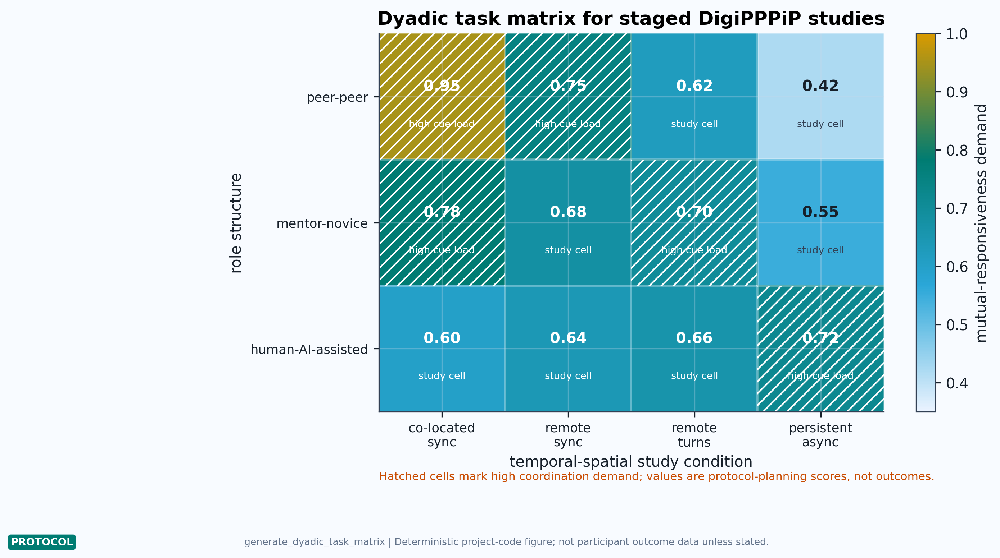
generate_dyadic_task_matrix() encode conceptual
mutual-responsiveness demand across role structures and temporal-spatial
conditions; read rows as partner-role arrangements, columns as session
modes, numeric labels as planning scores, and patterned cells as
high-coordination conditions. The matrix supports the temporal
architecture’s sampling argument rather than ranking modes as
universally better. Empirical calibration would require observed timing
logs, participant reports, and matched-condition
comparisons.fig. 7 shows how the temporal distinction becomes measurable. Strokes, utterances, repairs, and synchrony windows occupy separate tracks so future studies can distinguish overlap, alternation, latency, and delayed response without collapsing all of them into a single session label.
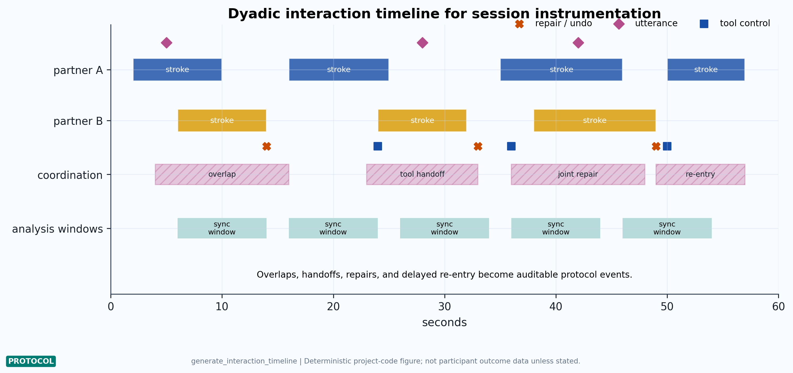
generate_interaction_timeline(); read labelled bars as
partner strokes, patterned spans as coordination windows, markers as
utterances, tool-control changes, and repairs, and bottom bands as
candidate analysis intervals. It supports the claim that temporal mode
must be logged rather than asserted. The plot is a protocol schematic;
participant data would replace the simulated intervals.fig. 8 complements the timeline with three canonical event patterns. The point is design clarity: parallel marks, turn-taking marks, and long-delay marks invite different hypotheses about attention, anticipation, and narrative continuity.
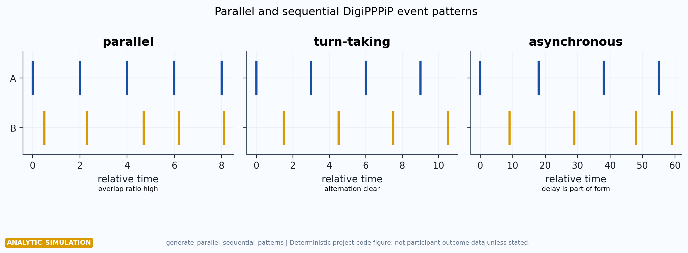
generate_parallel_sequential_patterns() use blue and orange
event ticks to show overlap ratio, alternation, and long-delay response
structure. The figure supports the temporal taxonomy by showing why
synchrony, alternation, and persistence are different hypotheses. It is
schematic; empirical use would require timestamped session
logs.fig. 9 gives a conceptual phase model for synchronous sessions. It should not be read as empirical functional near-infrared spectroscopy (fNIRS) output. Its role is to make explicit the hypothesis that initiation, elaboration, convergence, and completion may differ in inter-brain-synchrony profiles and should be tested directly.
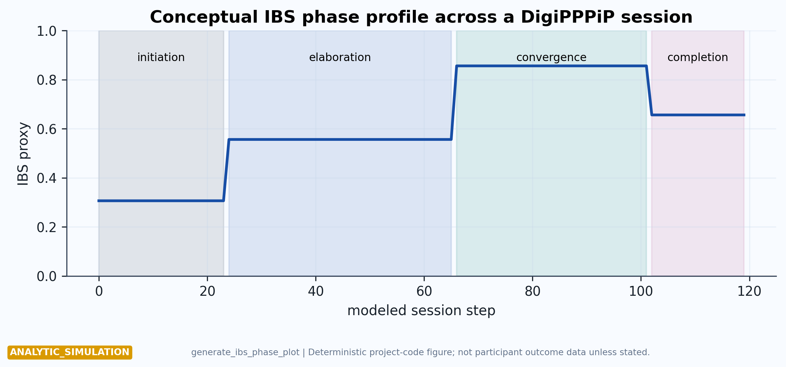
generate_ibs_phase_plot() from
src/hyperscanning.py; read the line as an illustrative
synchrony proxy and shaded bands as session phases. The figure supports
hypothesis formation for synchronous sessions, not neural evidence. Real
fNIRS or electroencephalography (EEG) analyses would need artifact
correction, controls, and preregistered phase definitions.5 Modeling Lens: Active Inference Without Mechanism Claims
Active inference gives DigiPPPiP a disciplined modeling vocabulary for dyadic mark-making. Each partner maintains expectations about the shared canvas, the other partner’s contribution, and the evolving meaning of the artifact. The shared drawing is therefore a sensory sample, a prediction target, and an action channel (Friston 2010; Friston et al. 2017; Ramstead et al. 2020). Active-inference accounts of human communication support this interactional reading only when the model stays tied to observable communicative events rather than becoming a generic metaphor (Vasil et al. 2020). In second-person terms, the partner is not a stimulus to observe from outside but an agent whose responses shape one’s own policy choices (Schilbach et al. 2013; Redcay and Schilbach 2019; Lehmann et al. 2024).
The main claim is intentionally narrow. DigiPPPiP does not claim that participants literally compute free-energy equations, nor that the current simulations measure a real couple. The claim is that a useful formal account must specify states, observations, policies, update rules, and observable consequences. If a study cannot map interface events to observations, define partner-relevant policies, or distinguish reciprocal updating from shared-stimulus effects, then active inference is not doing explanatory work for that study.
The formal appendix consolidates the mathematical primitives, model
figures, and toy diagnostics in one place sec. 19. That appendix maps DigiPPPiP
events to active-inference variables, gives the Gaussian point-belief
model used by src/active_inference.py, shows the
coupled-versus-decoupled toy run, and places narrative entropy,
epistemic arcs, and geometric hyperscanning under the same evidence
boundary. Keeping those details out of the main line makes the argument
easier to inspect: the manuscript first states why the model is useful,
then the appendix shows exactly what the model assumes.
This separation also protects the empirical agenda. Hyperscanning, narrative information, and free-energy trajectories are candidate measurement languages, not outcome evidence. Synchrony can be inflated by shared stimulus timing, motion artifacts, physiology, preprocessing decisions, and analytic windows (Tachtsidis and Scholkmann 2016; Hamilton 2021; Zimmermann et al. 2024). Narrative entropy can identify symbolic structure without proving shared meaning. A conceptual free-energy curve can expose a coupling assumption without showing that partners improved. The framework is strongest when each formalism names the future comparison that could reject it.
The practical upshot is a modeling checklist. A DigiPPPiP study should log the visible mark, the timing of the response, the partner-facing cue, the repair or withdrawal option, and the artifact-governance state. It should then ask whether the model explains something beyond simpler alternatives such as ordinary shared drawing, video conversation, or solo art-making. Active inference remains in the manuscript because it forces those commitments into the open, not because it upgrades conceptual simulations into evidence.
6 Neuroergonomic Burden and Shared Attention
Neuroergonomics studies brain and behavior in real-world tasks rather than only laboratory tasks (Ayaz and Dehais 2019). DigiPPPiP needs this framing because the desired practice happens in homes, cafes, studios, hospitals, classrooms, and long-distance relationships. Mobile functional near-infrared spectroscopy (fNIRS) and related field methods make it increasingly plausible to study social and cognitive workload in naturalistic environments (Dehais et al. 2020; Moffat et al. 2024). The same literature also cautions that naturalism raises measurement risk: motion, lighting, posture, fatigue, device familiarity, and partner relationship history can all change what a signal means.
The core design rule is restraint. The original paper-based practice worked partly because the interface was nearly invisible: pen, paper, partner, mark (Mikhailova and Friedman 2018). Digital implementations should add capabilities only where they support the dyad: shared visibility, accessibility, persistence, consentful replay, or place anchoring. Tool palettes, notifications, social feeds, and AI suggestions can easily become technoference if they compete with partner attention, a risk already documented in couple-relationship technology research (McDaniel and Coyne 2016).
Attention is the scarce resource in DigiPPPiP. The first-principles question for any interface feature is whether it increases partner-directed perception, action, repair, or reflection. A feature that increases expressivity while fragmenting attention is not automatically an improvement. A slower or plainer interface may be neuroergonomically superior when it keeps the dyad inside the shared act rather than inside the tool.
fig. 10 operationalizes three design constraints. The flow surface represents challenge-skill balance, drawing on flow research while remaining a conceptual interface diagnostic rather than an experience sample (Csikszentmihalyi and LeFevre 1989). The technoference curve models the cost of interruptions. The attention simplex asserts that attention must be allocated among the partner’s marks, one’s own marks, and the shared canvas. These are design diagnostics, not biomarkers. Their purpose is to make interface burden visible before a digital feature is treated as relationally helpful.
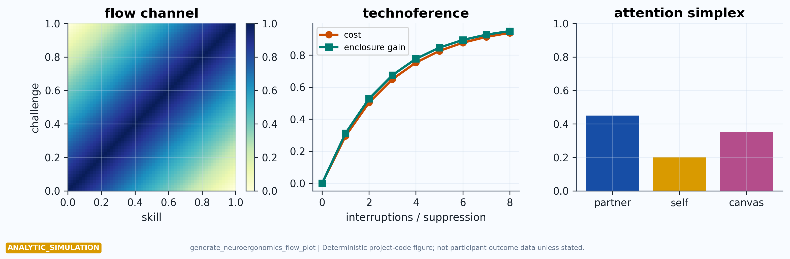
generate_neuroergonomics_flow_plot() from
src/neuroergonomics.py; read the panels as challenge-skill
fit, interruption cost versus enclosure gain, and distribution of
attention across partner, self, and canvas. It supports interface-burden
reasoning. The values are design primitives, not measured workload or
flow-state evidence.Brain-computer interface (BCI) and neurofeedback extensions should remain secondary to the human-human practice. Digital art-therapy research suggests that technology can support creative expression and research instrumentation while creating ethical, material, and access constraints (Zubala et al. 2021; Reitere et al. 2024), but DigiPPPiP should not make neural instrumentation a prerequisite. The strongest design path is progressive enhancement: the practice works with pen and paper, improves with a shared digital canvas, and may later support optional biofeedback for research contexts.
7 Cyber-Phenomenology: Presence, Embodiment, and Mediation
DigiPPPiP changes the phenomenology of shared drawing. In co-present PPPiP, the partner’s mark arrives with posture, breath, hesitation, and ambient bodily cues. In remote DigiPPPiP, the mark arrives through a mediated surface. This does not make the practice unreal; it changes how embodiment is distributed across body, tool, screen, and archive. Phenomenology of embodiment gives the theoretical background for treating tools and media as extensions of bodily agency (Merleau-Ponty 2012), while presence research distinguishes social richness, mediated immediacy, and shared-space illusions as design variables rather than guarantees of togetherness (Lombard and Ditton 1997; Biocca 1997; Lee 2004).
Telepresence and re-embodiment are central. A remote shared canvas carries traces of the partner’s motor act, while video, voice, latency, cursor trails, stroke halos, and replay create additional layers of presence and absence (Lombard and Ditton 1997; Biocca 1997; Lee 2004). The concept of digitally mediated or marbled embodiment helps avoid a simplistic hierarchy in which physical co-presence is always authentic and remote connection is always degraded (Atuk and Cole 2024). Video-mediated collaborative drawing also shows that screen action is not merely a visual output; it is part of how participants make proposals, invite co-participation, and coordinate who has practical control of the emerging drawing (Oittinen and Räisänen 2025). A DigiPPPiP system can support social presence without photorealistic avatars by using lightweight, privacy-preserving cues: labeled cursors, delayed traces, visible turn-taking, and explicit tool-control state.
The same cues can fail phenomenologically. A cursor trail can feel intimate when it makes hesitation visible, but invasive when it makes every micro-movement inspectable. A replay can help partners revisit a moment, but it can also convert a fragile exchange into evidence to be judged later. DigiPPPiP therefore needs a phenomenology of control as much as a phenomenology of presence: partners should know when they are visible, when traces persist, and when a mark can be withdrawn.
Privacy is not just a settings panel in this account. Contextual-integrity theory treats privacy as appropriate information flow within a social context, while networked-privacy work treats privacy as a dynamic boundary-management process rather than a simple public/private switch (Nissenbaum 2011; Palen and Dourish 2003). Communication Privacy Management theory is especially relevant for partner drawing because the artifact can become co-owned: one partner’s expressive mark may disclose something about both partners, and later sharing may require negotiated rules rather than unilateral export (Petronio and Child 2020). A DigiPPPiP archive is therefore phenomenologically legitimate only when persistence, replay, and deletion preserve the dyad’s felt control over the trace.
This matters most for asynchronous practice. The gap between contributions becomes part of the event structure: the absence after a mark creates expectation; the next mark answers it. The formal appendix describes this as curiosity, epistemic action, and co-discovery under an expected-information-gain arc sec. 19. The phenomenological hypothesis is that waiting can intensify, not merely interrupt, dyadic meaning when the shared artifact remains stable and intentional. That claim should be tested with presence measures and qualitative accounts; it should not be generalized from theory alone.
8 Accessible Shared Drawing: Capability Before Claim
The original PPPiP emphasized low cost, but DigiPPPiP must treat disability access as a first-order constraint rather than an accommodation afterthought. Digital art therapy and telehealth arts-therapy research show that online and digital modalities can expand participation for people whose access needs make conventional studio or clinic settings difficult, while also introducing pragmatic and ethical constraints (Zubala et al. 2021; Reitere et al. 2024; Potash et al. 2020). Online art-therapy work with learning-disabled young adults also shows why the platform, group norms, and communication channel are part of access rather than neutral delivery infrastructure (Datlen and Pandolfi 2020). Reframing digital art therapy for digitally mediated practice adds the same structural warning: technology changes the therapeutic and relational triangle rather than simply transporting a studio session online (Haywood and Grant 2022). Accessibility here is not merely compliance; it changes what kinds of relational drawing become possible. Ability-based design and World Wide Web Consortium (W3C) accessibility guidance support this shift from generic interface polish toward capability-specific accommodation, including the Web Content Accessibility Guidelines (WCAG) and the Cognitive and Learning Disabilities Accessibility Task Force guidance (COGA) (Wobbrock et al. 2011; World Wide Web Consortium 2023, 2021). Participatory design work with children with special needs shows why access claims should be made with the people affected rather than inferred from designer intent (Frauenberger et al. 2011). Social accessibility research on assistive technology also shows that access is shaped by self-presentation, confidence, stigma, and the social meaning of visible supports (Shinohara and Wobbrock 2016).
Inclusive DigiPPPiP should support multiple input channels: stylus, touch, mouse, eye gaze, switch control, voice, assisted drawing, and partner-mediated contribution. It should support multiple feedback channels: visual stroke changes, haptic cues, audio descriptions, high-contrast modes, and replayable action histories. Accessible-visualization research adds an implementation lesson for the figures and the drawing interface: nonvisual access needs navigable structure, multimodal input, semantic rendering, and customizable text tokens rather than a static image label (Elavsky et al. 2024; Jones et al. 2024). Plain-language controls matter because the original practice made artistic skill non-essential; the digital successor should also make technical skill non-essential. The audit protocol in sec. 13 keeps these claims bounded to visible capabilities instead of claiming universal access.
In protocol terms, access should be documented before the session, during the session, and after the session. Before drawing, participants should be able to state preferred input methods, perceptual feedback, pacing, break needs, plain-language prompts, and partner-assistance boundaries without having to disclose a diagnosis. During drawing, the interface should log which accommodations were available and which were actually used, because a capability advertised but unavailable in the session cannot support an access claim. After drawing, participants should be able to review whether the accommodation preserved agency, privacy, and relational comfort rather than merely allowing task completion.
The access requirement is deeper than device compatibility. A participant must be able to initiate a mark, perceive the partner’s contribution, understand the session state, control persistence, and remain socially comfortable with the accommodation used. Image-heavy social systems can exclude blind users when visual content is not made semantically available (Morris et al. 2016). At the same time, accessibility is often co-produced among disabled and nondisabled companions in concrete settings rather than solved by a single feature (Branham and Kane 2015). If any of those conditions fails, the system may be technically accessible while relationally exclusionary. This is why the manuscript treats social accessibility as part of the design problem rather than a secondary usability issue.
fig. 11 translates those domains into implementation-facing commitments. The central point is not that the current framework is accessible for every user; it is that each access feature should be traceable to a partner need, a logged capability, and a participatory validation plan.
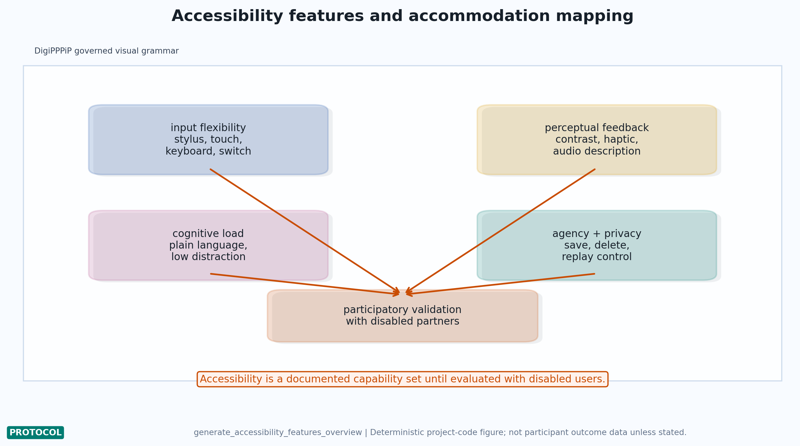
generate_accessibility_features_overview(); read each
box as an implementation commitment that must point toward the central
validation requirement with disabled partners, with accessible
visualization scholarship motivating structured descriptions and
customizable reading order. It supports the accessibility section’s
distinction between capability documentation and access claims. The
diagram is conceptual and does not certify compliance or universal
usability.Accessibility also includes relational safety. Partners need control over saving, sharing, replaying, exporting, deleting, and annotating a canvas. The persistent archive that makes asynchronous DigiPPPiP powerful can become invasive if consent and privacy are weak. The research agenda in sec. 14 therefore treats participatory design with disabled partners as a core empirical priority rather than a platform feature request.
9 Relational Aesthetics: Coauthored Marks and Social Form
Relational aesthetics frames art as a production of human relations rather than only objects for contemplation (Bourriaud 2002). Bishop’s critique is equally important because it warns against treating every engineered encounter as automatically emancipatory or socially meaningful (Bishop 2004). PPPiP already had a relational structure: the drawing mattered because it enacted the relationship. The couple joint drawing method gives this point a nearby arts-therapy precedent by treating shared drawing as an expression of connectedness and individuality rather than a finished-image score (Snir and Wiseman 2013). DigiPPPiP makes that ontology explicit in digital form. The artifact is a trace of mutual attention, negotiation, and improvisation; the canvas is a social scene.
Digital-intimacy research sharpens the claim. Technologies for strong-tie relationships often work through awareness, expressivity, physicalness, gift giving, joint action, and memory rather than through high-volume information transfer (Hassenzahl et al. 2012; Vetere et al. 2005). DigiPPPiP sits closest to joint action and memory: the partners do something together, and the resulting artifact can remain available as a trace. That makes the practice more specific than generic messaging and more cautious than therapeutic promise.
The first-principles relational test is whether the artifact still points back to the other person as an agent. A canvas full of marks is not relational if one partner dominates, if the other cannot perceive or alter the shared field, or if the system substitutes automated novelty for reciprocal response. Relational aesthetics therefore functions as a constraint on design: the scene must leave room for mutual recognition, refusal, repair, and surprise.
Creative arts therapy research offers a neurodynamic vocabulary for this claim. Aesthetic engagement externalizes affect, supports co-regulation, and creates intersubjective resonance (Vaisvaser et al. 2024). Close-relationship co-regulation scholarship narrows the term: it should mean bidirectional linkage across partners’ emotional channels, not a vague feeling of harmony (Butler and Randall 2012). Physiological-linkage reviews make the boundary even more conservative because linkage can be helpful, neutral, or risky depending on task, affective context, and overload (Timmons et al. 2015). Family-level coregulation models add a useful multi-timescale warning: dyadic regulation can be nested inside broader relational systems, so a drawing trace alone cannot prove well-being (Paley and Hajal 2022). Art-making studies also suggest plausible stress and reflection constructs for future measurement (Kaimal et al. 2016), while pandemic art-therapy discussions show why remote creative practices need careful ethical framing (Potash et al. 2020). Phygital art-therapy theory is useful here because it treats digital and physical media as an integrated practice ecology rather than as rival channels (Yoon et al. 2025). DigiPPPiP does not become therapy by declaration, but related mechanisms help explain why shared drawing may be relationally meaningful: partners make affect visible, modulate each other’s timing, and jointly discover an image neither would have made alone.
The important boundary is that DigiPPPiP remains human-human unless a study or design explicitly examines AI mediation. Generative AI can assist accessibility, prompts, or reflection, but it can also displace the mutual recognition that makes partner drawing relational. AI co-drawing belongs in a separate experimental branch, not as the default form of the practice.
10 Place-Based Micropractice and Digital Placemaking
Place-based DigiPPPiP treats the drawing context as part of the relational artifact. A shared canvas can carry marks from a kitchen table, a hospital room, a train, a park, or two distant cities. CSCW place theory distinguishes lived place from abstract space, which matters because a canvas becomes place-like only through situated practice and shared interpretation (Dourish 2006). Place-attachment research and networked-locality and digital-placemaking scholarship show that digital media can intensify rather than dissolve place attachment when it is designed to connect people, memory, and environment (Lewicka 2011; Gordon and Souza e Silva 2011; Foth et al. 2015; Canelas and Hoehnk 2025). The relevant unit is small: a canvas can become a relational micro-place even if it never becomes a public platform or civic interface.
Place-responsive DigiPPPiP asks each partner to draw from their immediate environment. One partner may contribute a window view; another may respond with a local sound, map trace, color palette, or remembered path. The result is neither a private diary nor a generic online whiteboard. It is a relational place object: two embodied situations negotiated on one shared surface. Place claims should remain qualitative until participants describe particular canvases as meaningful places.
The minimum place claim requires recurrence, situated reference, and shared uptake. A one-time location tag is only metadata; a repeated drawing practice can become place-responsive when partners return to recognizable cues and use them to coordinate memory, mood, or care. This boundary keeps placemaking from becoming a decorative label for any geolocated canvas.
A place-responsive protocol should therefore ask what place cue is being shared, who chose it, how precise it needs to be, and whether either partner wants it excluded from storage or export. The cue can be coarse: room type, local weather, a remembered path, an object on the table, a hospital routine, or a neighborhood sound. Precise global positioning system (GPS) coordinates are not required for the framework claim and may be inappropriate when the canvas is intimate, health-adjacent, or used by a vulnerable participant. The research record should preserve the prompt category and consent state without turning place into surveillance.
fig. 12 maps this scale. The figure treats kitchens, studios, hospital rooms, trains, and two-city routines as contexts that can feed a persistent canvas. The point is not that a digital artifact automatically creates place attachment; it is that repeated return, situated prompts, and shared memory can make a canvas function like a small relational place.
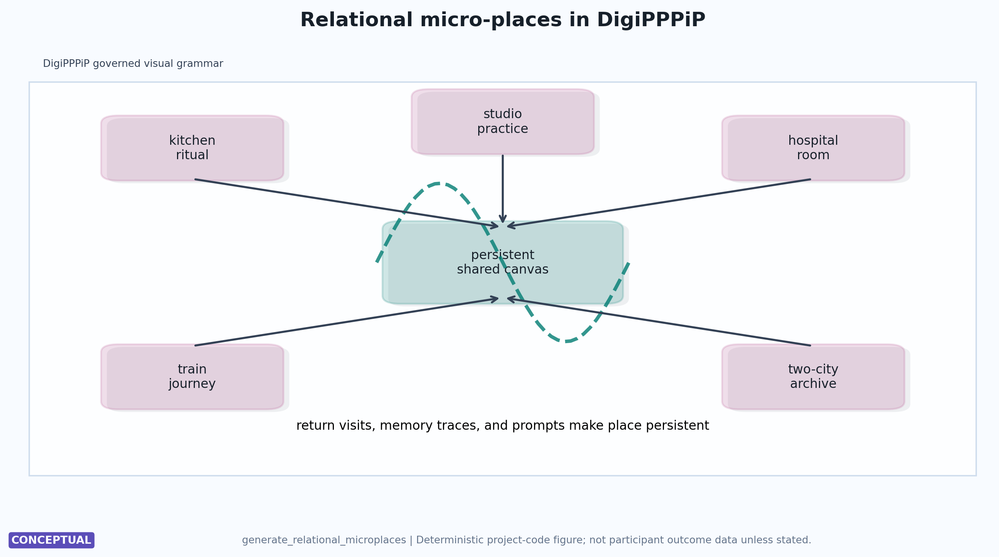
generate_relational_microplaces(); read the peripheral
place boxes as situated contexts and the central artifact as a
persistent canvas that can be revisited. It supports the place-based
claim that recurrence and shared uptake matter more than geolocation
alone. The diagram is conceptual and does not imply surveillance,
community-scale impact, or universal place attachment.This place dimension is especially useful for long-distance partners and communities. A remote digital mode can support geographic reach, but place-responsive prompts keep the practice situated. The taxonomy in fig. 13 captures this as a trade-off between geographic reach and place grounding rather than a binary opposition between online and offline.
11 Temporal-Spatial Taxonomy for Study Design
DigiPPPiP is organized by two primary axes: temporal structure and spatial configuration. The configured project has 3 temporal modes, 3 spatial configurations, and 9 total modality cells. fig. 13 is the central map of that design space. The axes intentionally separate relation from infrastructure: two partners can be relationally engaged while co-present, remote, delayed, or hybrid, but each cell changes what can be perceived, logged, repaired, and revisited.

generate_taxonomy_matrix() from
src/taxonomy.py; read rows as temporal structures, columns
as spatial configurations, cell labels as modality names, numeric labels
as conceptual neural-synchrony affordance scores, and hatching as
high-affordance cells. It supports decision-making about study
conditions rather than product ranking. The scores are design variables,
and measured synchrony would require participant physiology and
controls.The taxonomy is not a typology for naming products. It is a decision procedure for matching relational need to temporal-spatial form. A study should first identify the hard constraint: co-presence, distance, disability access, uneven schedules, privacy risk, or place memory. It should then choose the simplest cell that satisfies that constraint while preserving agency and mutual interpretability. This prevents the framework from treating the most instrumented cell as the most advanced one.
| Temporal structure | Co-located physical | Remote digital | Cyberphysical hybrid |
|---|---|---|---|
| Synchronous | Original PPPiP | Video-call plus shared canvas | AR overlay on paper |
| Semisynchronous | Turn-taking in the same room | Turn-taking shared canvas | Smart paper plus live mirror |
| Asynchronous | Sequential physical artifact | Persistent shared canvas | Photographed or printed exchange |
tbl. 1 should be read as a decision aid. A couple seeking immediate mutual attunement may choose synchronous co-presence. A long-distance couple with uneven schedules may choose asynchronous remote drawing. A pair interested in place memory may choose a cyberphysical hybrid that links physical marks with a persistent digital archive. The highest conceptual neural-synchrony score in the configured taxonomy is 0.95, but no single cell is universally best. The appropriate cell depends on access needs, privacy constraints, device availability, emotional goals, and the amount of persistence a dyad actually wants.
12 Dyadic Digital Health: Consent, Relationship Boundaries, and AI Separation
Dyadic digital health research is important because DigiPPPiP addresses two interdependent people rather than an isolated user. Scoping work on dyadic digital health interventions shows that digital systems can be designed around partner interdependence, shared goals, and reciprocal support (Shaffer et al. 2022). Dyadic health science also sets a stronger methodological bar: high-quality work should include both dyad members, focus on a meaningful relationship, and ground the dyadic rationale in theory rather than convenience sampling (Wilson et al. 2024). Recent dyadic digital-health design work shows how shared-care modules can expose live reports, care roles, messaging, timelines, and resources for patient-caregiver pairs (Benmessaoud et al. 2023). Digital interventions for relationship quality show why low-barrier formats matter: cost, stigma, geography, and scheduling can prevent couples from accessing formal services (Kernová et al. 2025). Qualitative work on remote Dyadic Developmental Psychotherapy sharpens the remote-care boundary: online delivery can widen access, but families differ in engagement, nonverbal communication, decompression, and preference, so remote format must be tailored rather than presumed equivalent (Blair et al. 2024). At the same time, DigiPPPiP should not borrow clinical authority from adjacent literatures without clinical evidence of its own.
DigiPPPiP should be positioned as a non-clinical relational practice unless tested otherwise. It may support intimacy, novelty, communication, and emotional co-regulation, but the manuscript does not claim clinical efficacy. That distinction matters for ethics and study design. Art-making, digital-art-therapy, tele-art-therapy, phygital art-therapy, and remote dyadic-therapy sources motivate plausible constructs such as reflection, stress change, expressive engagement, remote delivery constraints, and therapeutic-relationship cautions (Kaimal et al. 2016; Zubala et al. 2021; Potash et al. 2020; Miller and McDonald 2020; Datlen and Pandolfi 2020; Haywood and Grant 2022; Yoon et al. 2025; Blair et al. 2024), but they do not show that DigiPPPiP treats distress or improves relationships. The appropriate next step is to compare DigiPPPiP against matched shared activities, not to assume it outperforms them. The planned outcome structure in fig. 29 is included to make that comparison explicit.
The boundary condition is equally important. DigiPPPiP should not be used as a substitute for crisis support, couple therapy, medical treatment, or safeguarding procedures. A digital canvas can invite disclosure, conflict, dependency, or unwanted archiving; any study or deployment must define escalation paths, deletion rights, and exclusion criteria before recruiting participants. The health framing is legitimate only when it makes risk and referral responsibilities clearer.
The minimum health-adjacent protocol should include a plain-language non-treatment statement, eligibility and stop rules, contact paths for discomfort or conflict, referral information appropriate to the study setting, and a distinction between facilitator, researcher, therapist, and platform roles. It should also specify whether any clinical, physiological, or mental-health data are collected; if not, the protocol should say so explicitly. If those data are collected, they belong under separate consent, retention, access, and analysis rules rather than under the ordinary shared-canvas archive.
The privacy boundary is dyadic, not individual. Contextual privacy and communication-privacy scholarship make clear that sharing depends on actors, purposes, transmission rules, and negotiated ownership of disclosed information (Nissenbaum 2011; Petronio and Child 2020). Human-computer interaction (HCI) privacy research sharpens that point by treating privacy and security as social and cultural practices rather than only policy toggles (Dourish and Anderson 2006). Values-in-design work adds a method requirement: privacy, consent, access, and authorship need design levers that bring tensions into the design process before deployment (Shilton 2012). Digital-health consent reviews add a practical constraint: people often want transparency about who accesses health information, for what purpose, and under what oversight (Kassam et al. 2023). Consent-forward digital mental-health scholarship pushes the same issue toward design practice by arguing that users should have meaningful choices over how sensitive data are collected, shared, and reused (Pendse et al. 2024). For DigiPPPiP this means a study cannot treat export consent as a one-person checkbox when the artifact records a joint interaction. The minimum safeguard is pair-level governance: consent before saving, visible persistence state during drawing, mutually understandable deletion and redaction paths, and separate rules for research logs, personal keepsakes, therapist access, and public exhibition.
The difficult cases should be written into the protocol before recruitment. Deletion, export, replay, redaction, withdrawal, adverse-event reporting, data retention, and one-partner-disagrees scenarios are not edge decorations; they define whether a persistent dyadic archive is consentful. When partners disagree about saving, replay, export, exhibition, or secondary analysis, DigiPPPiP should default to the less-disclosing option unless both partners explicitly approve the more disclosing one. That rule protects the human-human default claim: the shared artifact is valuable only while both partners retain agency over how it persists.
The digital intimacy and relationship-technology literature supports a broader claim: online relational practices can be meaningful when they are intentional, reciprocal, and norm-governed (Kernová et al. 2025; Hassenzahl et al. 2012; Vetere et al. 2005). Studies of long-distance video chat show that mediated presence can become part of everyday relationship maintenance (Neustaedter and Greenberg 2012), and minimal-communication work shows that small signals can carry relational meaning when they are embedded in a strong-tie routine (Kaye 2006). Qualitative work on the Couple app is especially close to DigiPPPiP because partners used a pair-bounded platform with asynchronous posts, live sketching, and lightweight haptic signaling while inventing their own relational norms (McVeigh-Schultz and Baym 2015). Recent relatedness-technology reviews and long-distance textile prototypes sharpen the evidence boundary: the design space is rich, but empirical effects, theory grounding, and ethics often remain underdeveloped, so DigiPPPiP should compare against simpler relational technologies rather than assume superiority (Wenhart et al. 2025; Jiang et al. 2025). Companion-AI scholarship adds the negative boundary: if automation is designed or received as a relationship substitute, it may alter social motivation, expectations, or human relationship investment, so DigiPPPiP’s optional AI branch must be governed as mediation rather than companionship (Malfacini 2025). DigiPPPiP adds a distinctive visual and gestural channel to that landscape. It is not just messaging with pictures; it is a shared surface where each partner sees the other’s decisions become part of a common artifact.
13 Methods Protocol: Governance, Provenance, and Validation
13.1 Event Logging and Participant-Facing Governance
DigiPPPiP is presented as a framework manuscript, so its method layer is a protocol specification rather than a participant dataset. The protocol requires timestamped events with actor, action, and channel fields; the example trace in fig. 14 has 6 summary fields, a mean interval of 4 seconds, and a turn-balance score of 1. This makes the distinction among synchronous, semisynchronous, and asynchronous sessions auditable instead of rhetorical. The same event stream supports replay, accessibility auditing, outcome modeling, and synchronization with optional physiological channels, but those uses must stay visibly downstream from the partner-facing mark.
Digital pen and paper research in observational settings gives a practical precedent for treating pen traces as analyzable field records rather than merely as drawings (Weibel et al. 2012). DigiPPPiP extends that idea to a dyadic protocol: the stroke is simultaneously a mark for the partner, an event for replay, and a data row for later audit. That dual role is why the manuscript separates the visible canvas from the event log, source ledger, and generated figure registry.
fig. 14 now treats the method layer as an end-to-end data-flow contract. Raw partner actions are captured as consented event rows, separated from the visible canvas and replay record, transformed into summaries, optionally modeled, rendered as figures and variables, governed by claim/source/readiness audits, and finally published through the template pipeline. The important architectural rule is separation: human-authored marks, optional AI outputs, computed diagnostics, and publication artifacts should remain distinguishable in both the protocol and the figures.
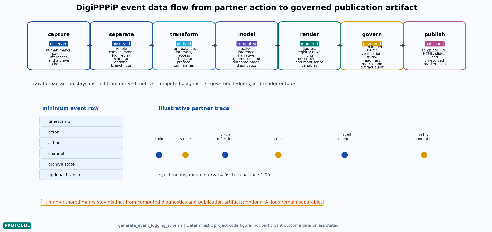
generate_event_logging_schema() from
src/session_events.py and
src/systems_governance.py; read the top row as the
capture-to-publication path, the lower-left list as minimum event-row
fields, and the timeline as an illustrative actor/action sequence with
temporal summary metrics. It supports the protocol claim that synchrony
categories, model diagnostics, generated figures, and publication
artifacts must remain auditable. The trace is illustrative, and
participant studies would replace it with consented logs while keeping
optional AI and physiology logs separable.Before human-subjects work, the protocol needs a participant-facing
layer as well as an analysis layer. The Common Rule and the Declaration
of Helsinki require consent, review, privacy, protocol clarity,
withdrawal, and risk handling to be explicit rather than inferred from
good intentions (U.S. Department of Health and Human Services,
Office for Human Research Protections 2025; World Medical
Association 2024). Digital-health consent scholarship adds
that participant understanding depends on concrete information about
access, purpose, privacy protection, and oversight (Kassam et al.
2023). The plain-language brief should say that two partners
are invited to draw on a shared surface; that the study records timing,
tool, archive-control, and optional replay events; that the activity is
not treatment or a relationship test; and that participants can pause,
stop, withdraw, ask questions, report discomfort, request redaction, and
ask about save, replay, export, and delete options before analysis lock.
If one partner wants more sharing and the other wants less, the stricter
privacy choice governs. This participant-facing appendix is generated as
a protocol artifact by src/study_readiness.py rather than
left as informal prose.
fig. 15 converts that ethics prose into a protocol matrix. The rows are not optional decorations: they make dyadic consent, deletion, export, replay, redaction, withdrawal, adverse-event reporting, retention, disagreement handling, intervention description, and optional AI-branch governance visible before recruitment. Consent-forward digital mental-health work supports this placement because archive controls need to be designed as user-facing choices rather than hidden back-office data policy (Pendse et al. 2024).
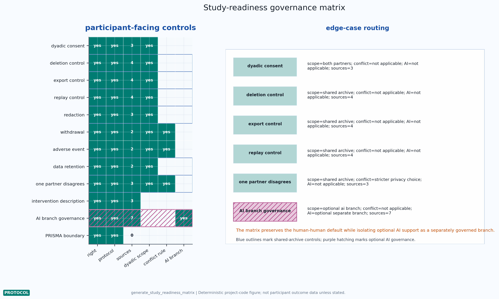
generate_study_readiness_matrix() from
src/study_readiness.py; read rows as protocol edge cases,
green cells as text-labelled readiness commitments, source counts as
anchor depth, blue outlines as shared-archive controls, purple hatching
as optional AI governance, and the right panel as routing for deletion,
export, replay, disagreement, and optional AI separation. It supports
participant-facing readiness rather than study results. Empty cells mark
controls that are not applicable to a given row, not missing
duties.13.2 Source and Claim Governance
The study protocol separates source quality from claim strength. Peer-reviewed empirical and review articles can support scoped design and measurement claims; books support theoretical framing; preprints and reports are treated as provisional. fig. 16 encodes those rules so speculative additions, including geometric hyperscanning and narrative-information proposals, are not used as settled evidence. This is why digital object identifier (DOI) verification matters: a search-result citation is not added unless title, authors, venue, and DOI or stable uniform resource locator (URL) match the intended claim. The stricter rule is claim-domain specific: therapy, neural synchrony, active inference, accessibility, placemaking, digital intimacy, AI mediation, and privacy persistence each have a different maximum defensible claim strength before new evidence is collected.
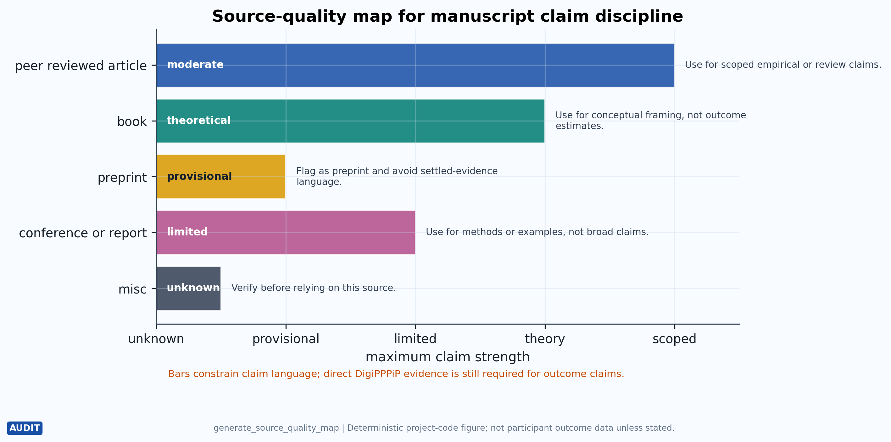
generate_source_quality_map() from
src/source_quality.py; read the horizontal bars as
conservative maximum claim strength by source class, the embedded labels
as source-tier roles, and the right-hand text as warnings for manuscript
use. It supports the protocol rule that bibliography type constrains
prose strength. The map is an audit device, not a judgment of individual
papers, and claims can strengthen only with domain-appropriate empirical
evidence.fig. 17 makes that red-team layer explicit across 14 recurring claim domains. The point is not to prohibit ambitious studies; it is to keep the manuscript from borrowing strength across domains. A valid shared-workspace source can motivate the interface, but it cannot establish relationship improvement. A hyperscanning method source can motivate instrumentation, but it cannot establish causality or therapeutic benefit. A digital-art-therapy review can motivate caution and study design, but it cannot turn DigiPPPiP into treatment without direct evidence.
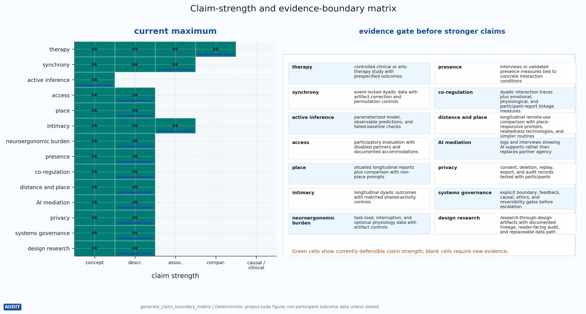
generate_claim_boundary_matrix() from
src/source_quality.py; read rows as reviewer-risk domains,
labelled green cells and blue rule marks as currently defensible claim
levels, and the right panel as the evidence gate required for stronger
language. It supports adversarial validity checking. The matrix is
conceptual, and a domain can move only after direct study evidence is
added.The boundary matrix is paired with a claim ledger rather than left as
an abstract warning. src/claim_ledger.py records recurring
manuscript claim families, their section, citekeys, present maximum
strength, and the evidence needed to upgrade them. fig. 18 makes the ledger visible. This
also documents the role of Perplexity and web search in the workflow:
discovery tools may nominate sources, but a citekey enters the ledger
only after the title, venue, year, and DOI or stable URL have been
checked against Crossref, a publisher page, an official standard, or an
archival record.
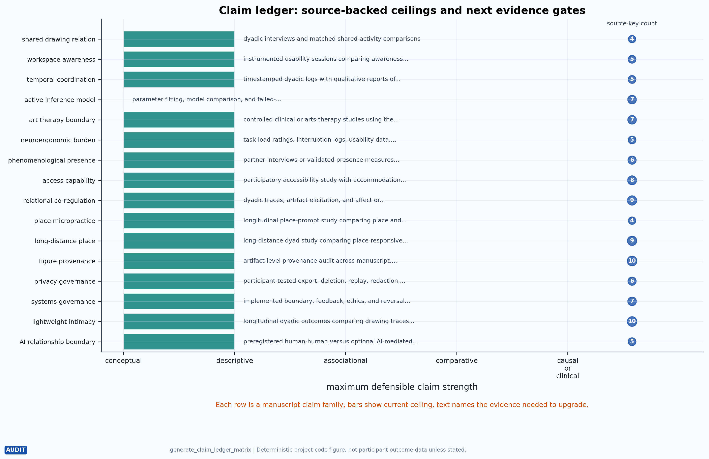
generate_claim_ledger_matrix() from
src/claim_ledger.py; read each row as a stable claim
family, each bar as the current maximum claim strength, the blue
numbered marker as evidence-key count, and the right-hand text as the
next evidence gate. It supports source-to-claim governance rather than
an empirical result. A stronger bar requires direct study evidence, not
a more adjacent citation.src/source_verification.py makes that rule executable.
Each governed citekey receives a locator, verification URL,
checked-as-of date, source tier, claim family, manuscript location, and
recheck trigger. The audit prioritizes 2024–2026 sources, preprints, AI
claims, digital-health claims, governance sources, and reporting
standards for refresh before submission. fig. 19 renders the current
source-verification state from the same governed citekey surfaces used
by tests: claim ledger, evidence graph, figure-method source bridge, and
study-readiness cases. The ledger is intentionally stricter than a
bibliography because it asks what claim family a source is allowed to
support and when it must be rechecked.
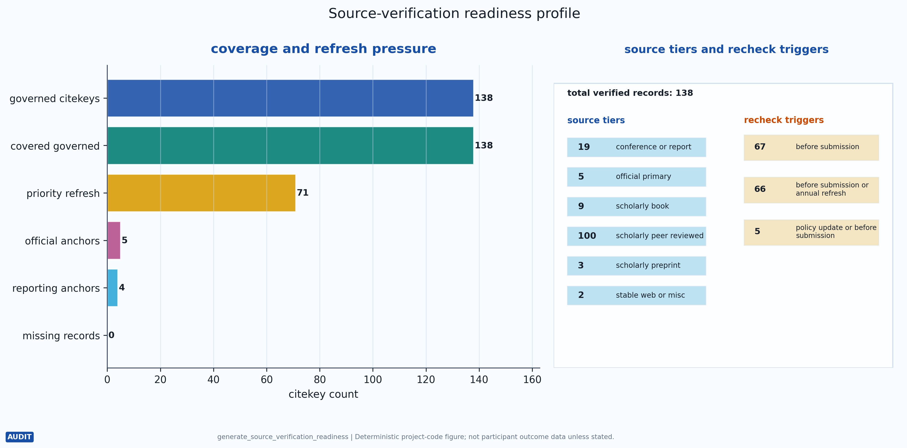
generate_source_verification_readiness() from
src/source_verification.py; read the left panel as labelled
citekey coverage and priority-refresh pressure, and the right panel as
source-tier and recheck-trigger counts in audit cards. It supports
provenance auditing rather than literature synthesis. A zero
missing-record count means the ledger has locators and metadata, not
that every source independently validates DigiPPPiP.13.3 Systems Boundary and Feedback Governance
A first-principles pass reduces DigiPPPiP to a small hard kernel: two
human partners, perceivable marks, temporal structure, response
opportunity, and accountable persistence.
src/systems_governance.py makes the rest explicit as
governed branches rather than implicit scope creep. The current systems
layer records 6 boundary elements, 5 feedback loops, 5 causal
assumptions, and 5 ethics gates, with a completeness score of 1.
Active-inference and enactive accounts support the action-perception
framing and Markov-blanket caution, while contextual privacy,
values-in-design, and human-subjects governance anchor the
participant-facing side of the boundary (Ramstead et al.
2020; Nissenbaum 2011; Shilton 2012; U.S. Department of Health
and Human Services, Office for Human Research Protections 2025; World Medical
Association 2024).
The boundary table keeps the human-human drawing loop inside the kernel and marks event logs, place context, physiology, AI assistance, and clinical translation as support structures or optional branches. Each branch has a reversal gate: place prompts can be declined or coarsened; physiology requires separate consent and artifact controls; AI suggestions must be labelled, rejectable, undoable, and separable from partner authorship; clinical translation stays out of scope until a reviewed intervention protocol exists. This is a systems-governance claim, not an efficacy claim. It says that the framework can name its boundaries and stop conditions before it asks participants or reviewers to trust them.
The feedback layer is deliberately adversarial. Action-perception loops should preserve mutual agency; privacy loops should default to the stricter dyadic archive choice; access loops should respond to fatigue, sensory mismatch, and assistance needs; AI loops should detect authorship confusion or partner substitution; evidence-escalation loops should downgrade language when controls or participant reports do not support a stronger claim. This makes falsification operational: if matched controls explain the same relatedness reports, if place prompts do not change situated memory, if replay feels like surveillance, if AI reduces co-authorship, or if physiological linkage disappears after artifact correction, the corresponding claim boundary narrows rather than hardens.
13.4 Evidence Scope and Non-Claims
The present manuscript implements a design and governance architecture, not a completed empirical evaluation. It demonstrates that DigiPPPiP concepts can be expressed as manuscript sections, tested primitives, generated figures, source ledgers, claim boundaries, protocol gates, and render artifacts. It does not demonstrate therapeutic efficacy, relationship improvement, neural coupling, universal accessibility, or AI benefit. Active inference, geometric hyperscanning, narrative information, and outcome modeling are used as modeling and measurement lenses; they become mechanisms only if future studies fit them to observed sessions, compare them with plausible alternatives, and survive the falsifiers named in the protocol.
This scope statement also governs visual interpretation. Architecture figures show boundaries, not deployed software. Data-flow figures show what a study should record, not what participants have already produced. Simulation plots show toy diagnostics, not human behavior. Audit figures show that the manuscript has local governance machinery, not that DigiPPPiP is externally validated. Those distinctions are intentionally repetitive because they are the main defense against attractive diagrams becoming overclaims.
13.5 Interactive Web Instantiation (Conceptual Demo)
DigiPPPiP is also implemented as a small, self-contained interactive web canvas so that the cyberphysical argument in sec. 3 is concrete rather than diagrammatic only. The application pairs people on a shared, low-latency drawing surface and relays strokes, undos, and cursor positions through a Socket.IO server; each participant is identified by a lightweight Adjective-Fruit moniker that follows their cursor across the shared field. Its design kernel is deliberately the minimum viable kernel described in sec. 3: partners, a shared mark field, perceptible traces of agency, and consentful control over persistence. The running tool is therefore a working instantiation of the architecture in fig. 4 rather than a clinical instrument.
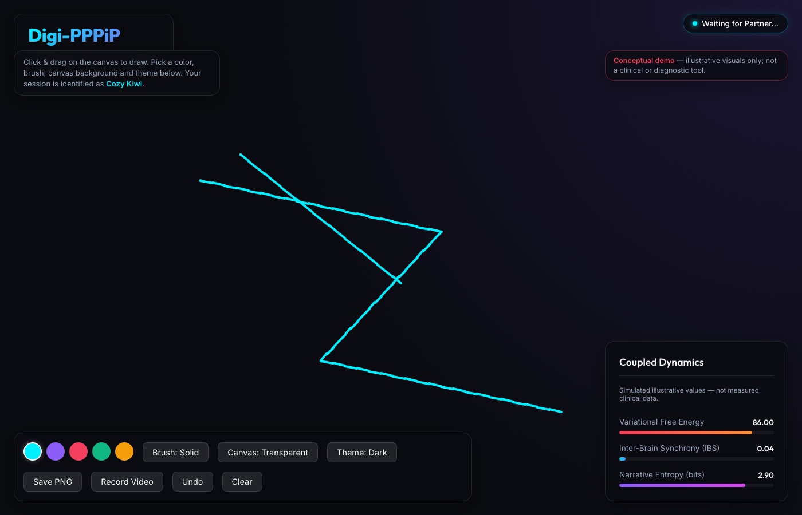
generate_webapp_main_canvas(); read the canvas as the
shared mark field, the top bar as session state, and the bottom-right
panel as the computed modeling lens. It supports the methods argument
that the cyberphysical substrate in fig. 4 is implementable. The screenshot is
conceptual; assessed usability and relational effects would require the
study protocol in sec. 13.The screen captures deliberately confine the relational claim. fig. 20 shows a single-user session; the paired dynamics the framework theorizes are rendered only as simulated values. fig. 21 isolates the live dashboard, where Variational Free Energy, Inter-Brain Synchrony, and Narrative Entropy are displayed with an explicit simulated-illustrative-values disclaimer. These numbers are generated client-side as a demonstration of the modeling lens; they are not experimental measurements and must not be read as evidence of neural coupling or therapeutic effect.
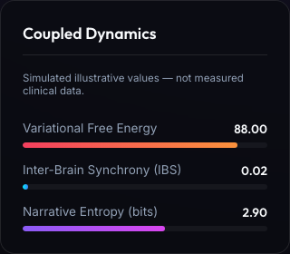
generate_webapp_metrics_dashboard(); read each row as
metric label, value, and relative magnitude. It supports the protocol
distinction between a computed modeling lens and an outcome measurement.
The values are simulated and illustrative; real values would require
physiological instrumentation and the consent and logging gates in
sec. 13.The interface also exposes configuration choices that matter for the accessibility and privacy commitments in sec. 8. fig. 22 shows the same canvas in a light theme, and fig. 23 shows the theme and canvas-background settings against a plain white canvas. These options are not cosmetic polish; they operationalize the ability-based and WCAG-informed design commitments of the framework by letting a pair choose contrast and background settings that fit their access needs, while session and archive controls remain distinct from the visible drawing surface.
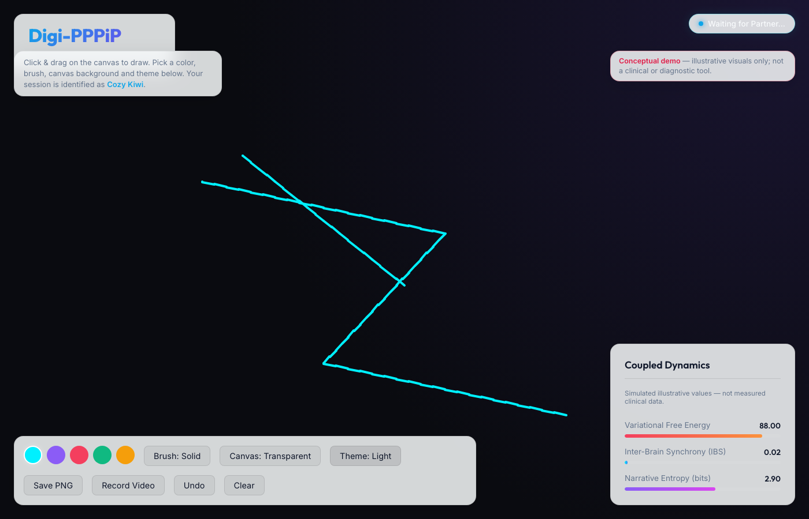
generate_webapp_light_theme(); read it as the tool’s
visual-contrast alternative to fig. 20. It supports the accessibility
commitment that theme and contrast are user-selectable. The screenshot
is conceptual; demonstrated accessibility benefit would require an
accessibility audit such as fig. 28.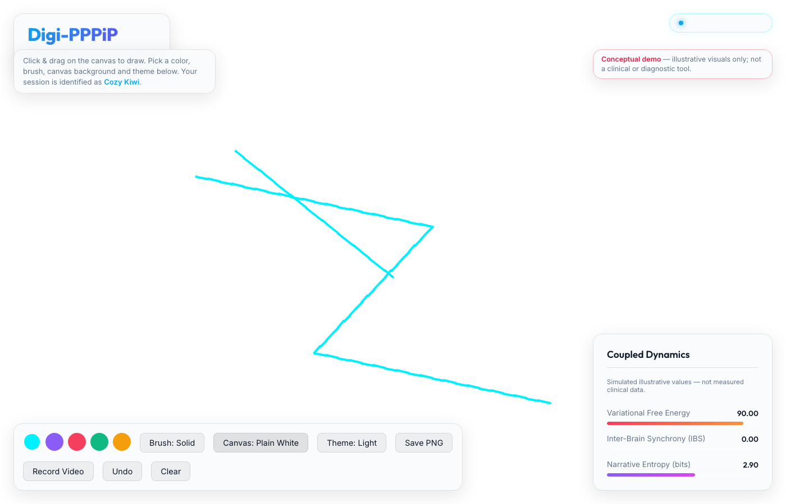
generate_webapp_theme_settings(); read the control row
as the selectable theme, brush, and background configuration. It
supports the design-commitment argument that visual-contrast and
background choices are first-order, user-facing settings. The screenshot
is conceptual and shows interface configuration, not measured
accessibility outcomes.13.6 Reproducible Figure Methods
The figure-generation method is also part of the research protocol rather than a cosmetic afterthought. Visualization grammars clarify how data, marks, scales, and layers compose (Wilkinson 2005; Wickham 2010; Bostock et al. 2011; Satyanarayan et al. 2017), while graphical-perception, color-use, and validation work shows that scientific figures need perceptual, task, and design justification rather than merely attractive styling (Cleveland and McGill 1984; Munzner 2009; Crameri et al. 2020). DigiPPPiP therefore treats each generated figure as a small reproducible claim object: a scoped argument, a method-lineage warrant, a tested primitive or explicitly conceptual source, a visual encoding grammar, an aesthetic/accessibility rule, a deterministic render, a registry entry, a caption contract, an accessibility description, and a render validation gate. fig. 24 encodes that artifact chain. The implemented method has 9 generation stages, 7 semantic encoding roles, 5 source-method families, 13 audit criteria, 8 required caption elements, and a method-contract score of 1. The relevant scholarship supports this restraint: effective figures need explicit design choices and accessible description, visualization provenance should preserve why analytic artifacts were produced, remote-health-monitoring visualization studies should account for clinician comprehension and stakeholder-specific granularity, interactive visual systems need inspectable operations, accessible visualizations need navigable structure and custom reading sequences, image-alt decisions need context-specific text alternatives, and reproducible computational work needs organized, regenerable artifacts (Kelleher and Wagener 2011; Rougier et al. 2014; Ragan et al. 2016; LeBaron et al. 2025; Heer and Shneiderman 2012; Elavsky et al. 2024; Jones et al. 2024; Eggert and Abou-Zahra 2024; Wilson et al. 2017; Rule et al. 2019; Stodden et al. 2014; Lundgard and Satyanarayan 2022).
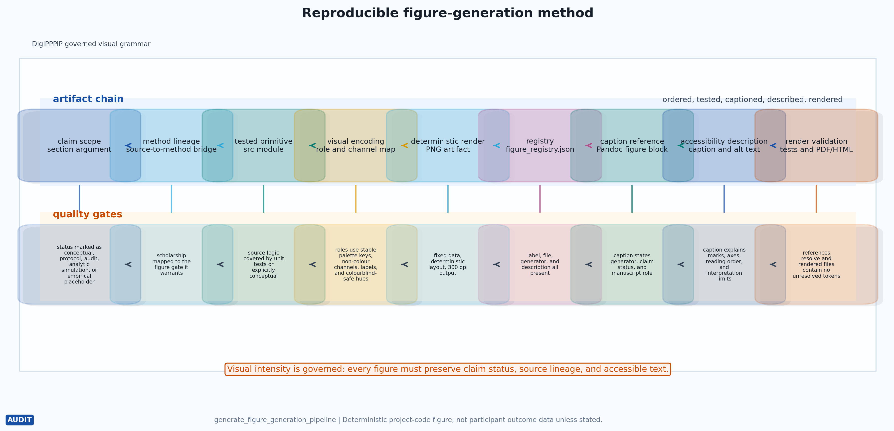
generate_figure_generation_pipeline() from
src/figure_methods.py; read the upper row as artifacts, the
lower row as quality gates, and the colored lanes as the governed
movement from scoped claim through accessibility description and render
validation. It supports the methods argument that figures are
reproducible claim objects. The pipeline is analytic, and future
empirical figures should inherit the same gates.Research-through-design scholarship explains why this workflow is not merely a publishing convenience. HCI research-through-design treats artifact making as a legitimate way to produce interaction-design knowledge when the artifact, process, and contribution are made legible (Zimmerman et al. 2007; Gaver 2012). Annotated portfolios and reflective design documentation make the same requirement more concrete: design artifacts need comparative framing, annotations, and traces of decision-making if they are to function as research outputs rather than illustrations (Gaver and Bowers 2012; Dalsgaard and Halskov 2012). DigiPPPiP applies that discipline to generated figures. fig. 25 renders the source-to-method bridge. A diagram is allowed to contribute conceptual structure only when its method lineage, code path, registry row, caption, and claim boundary are visible.
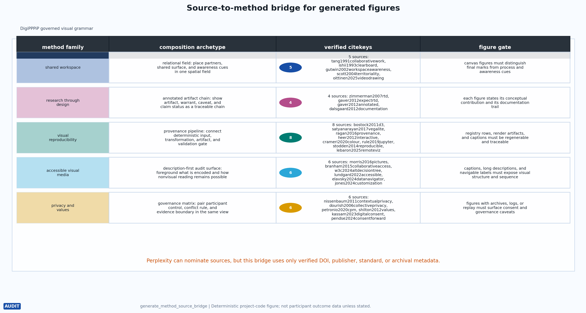
generate_method_source_bridge() from
src/figure_methods.py; read each row as a verified
scholarly family, its composition archetype, the citekeys used by the
project, source-count badges, and the gate it imposes on generated
figures. It supports the methods claim that diagrams are research
artifacts only when their warrant is traceable. The bridge is an audit
device and does not turn conceptual figures into empirical
evidence.fig. 26 makes the visual grammar explicit. Actors, artifacts, signals, contexts, evidence, models, and caveats are assigned stable palette keys, non-color channels, hierarchy rules, and accessibility constraints so that repeated figures can be interpreted as a family without depending on hue alone. The grammar is intentionally conservative: it separates human actors from software assistance, shared artifacts from outcomes, signal traces from interpretation, and placemaking contexts from universal community-scale claims. This makes captions more auditable because the reader can compare the figure’s visual roles with the claim boundary that the prose asserts.
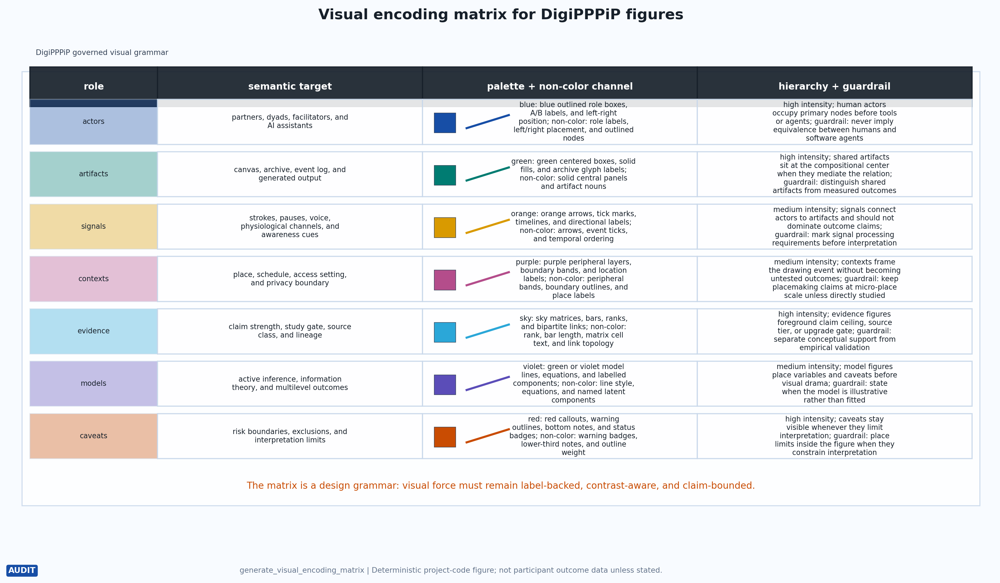
generate_visual_encoding_matrix() from
src/figure_methods.py; read each row as a semantic role
with its target, palette key, non-color channel, hierarchy rule,
contrast cue, and interpretation guardrail. It supports the methods
argument that repeated colors, labels, positions, marks, and text
equivalents form a reusable grammar. The matrix is conceptual, and
empirical data would add measured scales without removing the
guardrails.fig. 27 then turns the caption
and rendering expectations into a checklist. The audit is not a
guarantee that every reader will understand every figure in the same
way. It is a reproducibility guard: a figure must name what it encodes,
identify the source or generator, state its method lineage and
manuscript role, explain how to read marks or axes, declare whether it
is conceptual, protocol, audit, analytic simulation, or empirical
placeholder material, preserve the caveat that limits interpretation,
and identify what future evidence would upgrade the claim. That
requirement also improves accessibility because natural-language
descriptions can convey marks, statistics, perceptual relations, and
domain meaning for readers who cannot rely on the image alone (Lundgard and
Satyanarayan 2022). Current accessible-visualization work
extends the requirement from alt text toward navigable structure,
customizable token order, and reader-controlled verbosity (Elavsky et al.
2024; Jones et al. 2024). The code now writes
long-description sidecars for every generated figure and emits
../figures/figure_artifact_audit.json, an artifact-level
audit that checks registry uniqueness, orphan PNGs, dimensions, nonblank
pixels, manuscript references, caption/prose parity, claim-status
validity, long-description presence, readability metadata,
long-description reading guidance, and section alignment after the
figure set is rendered.
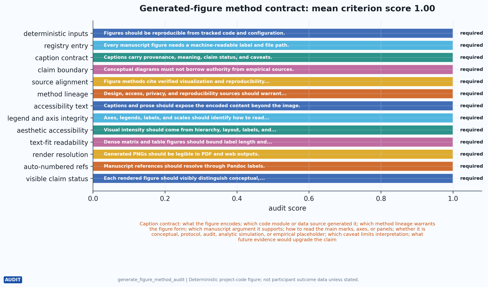
generate_figure_method_audit() from
src/figure_methods.py; read each row as a required gate
covering deterministic inputs, registry metadata, captions, claim
boundaries, source alignment, accessibility text, legend/axis integrity,
render resolution, auto-numbered references, and visible claim status.
It supports workflow verification, not participant inference. Failed
gates would require code or caption repair.13.7 Study Package, Access, Place, and Outcomes
The minimum reproducibility package for a DigiPPPiP study should include the protocol version, temporal-spatial condition, interface capabilities, event schema, exclusion windows, consent and persistence settings, accessibility accommodations, outcome measures, and analysis code. Without that package, readers cannot tell whether an observed result belongs to the dyad, the task, the technology, the access arrangement, or the analysis pipeline. This is a first-principles requirement: if the causal candidates cannot be separated, the interpretation cannot be audited.
The protocol appendix should also separate three participant-facing surfaces that are easy to collapse. The access surface records supported input channels, feedback channels, partner-mediated assistance, cognitive-load settings, communication preferences, and accommodation changes during the session. The place surface records only the situated cues that participants consent to share, such as room type, local prompt, mobility context, or remembered place, and it should not require precise geolocation for a place-responsive claim. The health surface states that DigiPPPiP is non-clinical unless a reviewed intervention protocol says otherwise, names stop and referral procedures, and separates personal keepsakes from research logs before any export or replay.
Reporting guidance supplies the study-readiness bridge. The Template for Intervention Description and Replication (TIDieR) requires enough intervention detail for replication, and the Consolidated Standards of Reporting Trials for eHealth (CONSORT-EHEALTH) names web and mobile health reporting elements that are easy to miss when an online intervention feels self-explanatory (Hoffmann et al. 2014; Eysenbach and Group 2011). For DigiPPPiP that means the protocol must define session dose, materials, platform settings, tailoring, fidelity, archive-control states, and changes made during the study. The Preferred Reporting Items for Systematic Reviews and Meta-Analyses (PRISMA) is not activated here because the evidence graph is a bounded narrative synthesis rather than a systematic review claim; it should be added only if the review question, search strategy, screening, extraction, and flow diagram become systematic.
Accessibility is handled as a protocol requirement. The current audit has 5 criteria and an illustrative implementation score of 1. The radar in fig. 28 is not a compliance certificate; it is a reproducible way to document which input, feedback, privacy, cognitive-load, and partner-mediation capabilities a study or tool actually supports.
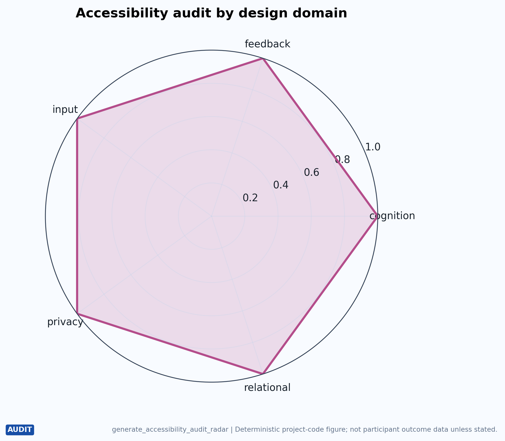
generate_accessibility_audit_radar() from
src/accessibility.py; read each spoke as a capability
domain and radial distance as documented support in the illustrative
configuration. It supports reproducible access auditing, not compliance
certification. Empirical accessibility claims would require
participatory validation with disabled users and accommodation
logs.Outcomes are organized as a multilevel design rather than a single success metric. The project defines 6 measures across 6 domains, with a default design-strength score of 4 for a randomized longitudinal study. fig. 29 shows how temporal mode, spatial configuration, phase, and access condition can be modeled with dyad and participant random effects. This structure separates implementation outcomes, such as latency and logging completeness, from relational outcomes, such as perceived connection and shared meaning.
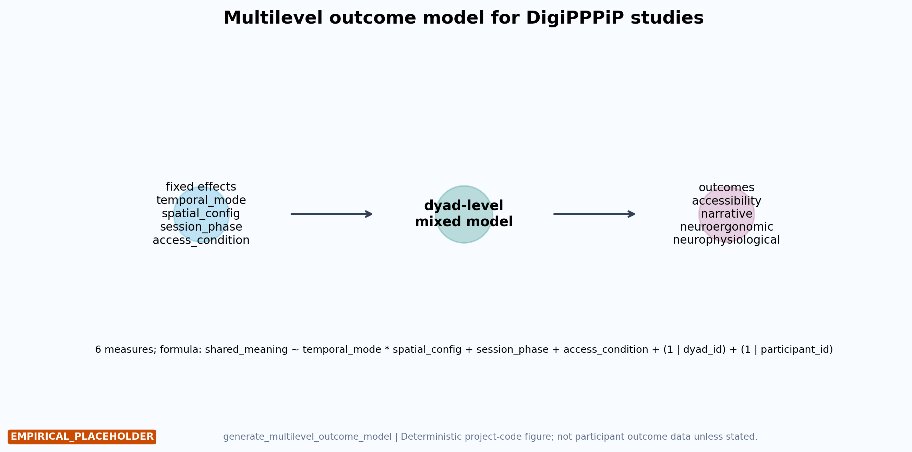
generate_multilevel_outcome_model() from
src/outcomes.py; read left components as fixed effects, the
center as the dyad-level mixed model, and the right component as outcome
domains. It supports planned-analysis specification rather than
reporting results. Validation would require real dyadic observations,
random effects diagnostics, and matched shared-activity
controls.13.8 Falsification and Claim Boundaries
Falsification should be designed in. The framework would be weakened if matched controls produce the same relational outcomes, if accessibility accommodations reduce rather than expand agency, if synchrony measures vanish after artifact correction, if AI suggestions displace rather than support human agency, or if participants describe persistent archives as surveillance rather than shared memory. Those outcomes would not invalidate shared drawing as a practice; they would delimit which mechanisms, contexts, or claims the framework can support.
fig. 30 expresses this as 5 staged gates. Feasibility and relational meaning come before access claims, matched outcome comparisons, and optional physiology. This ordering is adversarial by design: neural or computational sophistication cannot rescue a practice that is not understood, consentful, accessible to the stated population, or meaningfully different from simpler shared activities.
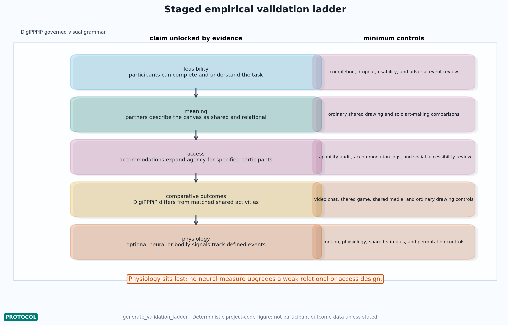
generate_validation_ladder() from
src/source_quality.py; read the left column as claims
unlocked by each stage and the right column as minimum controls before
escalation. It supports the protocol’s adversarial ordering from
feasibility and meaning through access, matched outcomes, and optional
physiology. The ladder is conceptual, and stronger claims require
completed studies at the relevant stage.This protocol prevents the main evidentiary errors. Active inference is used as a modeling language, not proof of mechanism. Hyperscanning synchrony is treated as a correlate until causal designs justify more (Cui et al. 2012; Czeszumski et al. 2020; Hamilton 2021; Zimmermann et al. 2024). Art-therapy and digital-health literatures motivate possible applications and cautions, but DigiPPPiP is not described as treatment without controlled clinical evidence (Zubala et al. 2021). Accessibility and placemaking claims stay bounded to the capabilities and populations actually tested.
14 Research Agenda: From Feasibility to Evidence
The framework identifies a large research program. fig. 31 condenses it into priorities that can be run as staged studies rather than as a single overbroad claim. The first priority is modality comparison: co-present paper PPPiP, synchronous remote DigiPPPiP, semisynchronous drawing, and asynchronous persistent-canvas practice should be compared on relational, phenomenological, behavioral, accessibility, and narrative outcomes. The comparison should include matched controls such as ordinary shared drawing, video chat, shared games, and solo art-making so DigiPPPiP is not credited for effects that any pleasant shared activity would produce.
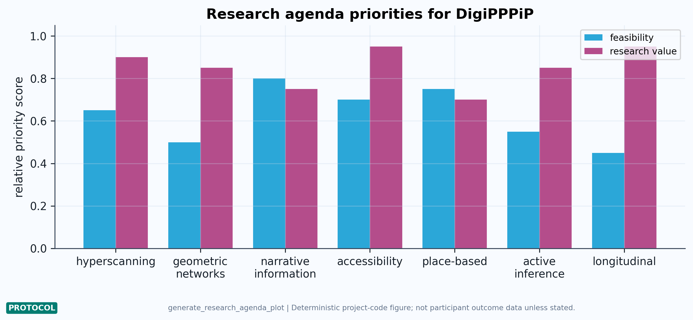
generate_research_agenda_plot(); read paired bars as
relative feasibility and research value assigned by the framework design
for each agenda item. It supports staged prioritization rather than
external funding or outcome claims. The values are conceptual planning
scores, and future versions should replace them with feasibility data,
stakeholder priorities, and study results.The staged path should begin with feasibility and meaning before physiology, following the validation ladder in fig. 30. Early studies should ask whether partners understand the task, preserve consent, use the canvas intentionally, and describe the artifacts as relationally meaningful. Only after those conditions hold should instrumentation-heavy studies test neural, narrative, or active-inference hypotheses. This ordering follows from the design kernel: no signal-processing result can rescue a practice that participants do not experience as shared agency.
The systems-governance agenda should be tested alongside the outcome agenda. A pilot should record whether partners use save, replay, redaction, deletion, and export controls; whether place prompts are accepted, declined, or coarsened; whether accessibility accommodations change during the session; and whether optional AI suggestions are ignored, rejected, revised, or treated as partner-like. These are not secondary usability details. They are the feedback signals that decide whether the framework’s branches remain reversible and ethically bounded.
Hyperscanning studies should test whether the phase structure in fig. 9 appears in real dyads. Geometric-hyperscanning studies should evaluate whether the appendix’s curvature proxy tracks rupture, repair, or co-regulation events after the artifact and alignment limits are addressed sec. 19. Narrative-information studies should test whether the appendix’s entropy and surprisal primitives predict partners’ reports of novelty, coherence, or shared meaning (Schulz et al. 2024).
Accessibility research should be participatory from the start. Disabled partners should help define input modes, feedback channels, consent controls, and successful participation. Place-based studies should test whether place-responsive prompts increase place attachment or relational memory compared with non-place prompts (Lewicka 2011).
AI-assisted studies need a separate preregistered logic. Mixed-initiative interfaces can join automated suggestions with direct manipulation, but that does not make automation harmless or relationship-preserving (Horvitz 1999; Deterding et al. 2017). AI-mediated communication scholarship is especially relevant because it treats AI as modifying, augmenting, or generating interpersonal messages on behalf of a communicator, with consequences for agency, trust, relationship interpretation, and ethics (Hancock et al. 2020). Companion-AI scholarship adds a distinct replacement and social-deskilling concern, so AI-supported DigiPPPiP should be measured against whether it strengthens human-human attention rather than satisfying a user through the system itself (Malfacini 2025). Human-AI interaction guidelines imply concrete requirements for DigiPPPiP: disclose what the model can and cannot do, let partners accept, reject, revise, or undo suggestions, support efficient dismissal, and recover gracefully from wrong or intrusive prompts (Amershi et al. 2019). If the AI branch becomes a clinical or health-intervention trial, the Consolidated Standards of Reporting Trials for AI (CONSORT-AI) and the Standard Protocol Items for AI trials (SPIRIT-AI) extensions require AI-specific descriptions of the intervention, input and output data, human-AI interaction, errors, and use setting (Liu et al. 2020; Cruz Rivera et al. 2020). Even outside a trial, the optional branch should maintain a risk log using the National Institute of Standards and Technology Artificial Intelligence Risk Management Framework (NIST AI RMF) concepts and check whether any deployed system would fall within European Union (EU) AI Act obligations (Tabassi 2023; European Parliament and Council of the European Union 2024). Empirical medical-AI ethics reviews add a further caution: high-level ethical principles often fail to match stakeholder experience unless patients, clinicians, developers, and ethics expertise are involved in the design and evaluation process (Tang et al. 2023). The outcome question is not whether AI makes drawings more polished. It is whether AI helps partners notice each other, preserve co-authorship, and discuss uncertainty without outsourcing imagination, authorship, or emotional interpretation.
Longitudinal studies should compare DigiPPPiP with matched shared activities such as video calls, shared games, text messaging, relatedness-technology prototypes, or shared media consumption (Wenhart et al. 2025). The comparison set should include at least one lightweight routine and one richer sensory or gestural system, because affective textile systems for long-distance partners show how non-visual gesture channels can address needs that a drawing canvas may not meet (Jiang et al. 2025). No single method can validate the framework; the research agenda has to triangulate logs, interviews, accessibility audits, relational outcomes, privacy acceptability, and optional physiology.
15 Integrative Model: The Human-Human DigiPPPiP Kernel
DigiPPPiP can be summarized as a cyberphysical relational practice. Its first layer is a coupled modeling lens: partners can be described as updating expectations about each other’s intentions through shared marks, with the formal primitive isolated in sec. 19. Its second layer is cyber-phenomenological co-presence: marks carry embodied gesture across physical, digital, and hybrid surfaces. Its third layer is narrative information architecture: sessions become symbolic trajectories with entropy, surprise, and convergence.
The fourth layer is neuroergonomic design: the interface should preserve attention, reduce technoference, and support flow. The fifth layer is place-relational grounding: sessions can bind two bodies, two environments, and one artifact. The sixth layer is accessibility: input and feedback should adapt to participants rather than forcing participants to adapt to one canonical interface. The word “accessibility” is used here as a design and validation program, not as a universal guarantee.
The seventh layer is temporal flexibility. Synchronous, semisynchronous, and asynchronous modes are not rank-ordered; they answer different relational constraints. The eighth layer is measurement. Active-inference, narrative-information, event-log, accessibility, outcome-model, and geometric-hyperscanning tools give the framework empirical handles without letting the manuscript pretend that conceptual simulations are evidence.
The model can also be collapsed to a minimum viable DigiPPPiP loop: partner acts, mark persists, other partner perceives, response changes the shared field, and both partners retain agency over what remains. Every larger layer should be justified by how it strengthens that loop. If a feature does not improve perception, action, persistence, interpretation, access, or consent, it is outside the core framework even if it is technically impressive. The architecture in fig. 4 operationalizes that rule by separating the kernel from instrumentation, modeling, optional AI support, and publication governance.
The systems-governance layer makes that collapse enforceable.
src/systems_governance.py treats the human-human mark loop
as the kernel and places event logs, place context, optional physiology,
AI assistance, and clinical translation in named boundary positions.
This matters because a system boundary is a design decision, not a
discovered fact: moving physiology, AI, or clinical translation into the
kernel would change the participant contract and the evidence burden.
The integrative model therefore remains reversible. Branches can be
removed, disabled, coarsened, or downgraded without losing the core
practice.
fig. 32 summarizes the reusable visual grammar that holds these layers together. Actors, artifacts, signals, contexts, diagnostics, and evidence maps are styled consistently so captions can identify what is encoded, which generator produced it, what claim strength it supports, and what caveat remains. The grammar now has a stronger architecture role: human actions, optional AI branches, computed diagnostics, and publication artifacts should be visually separable even when they appear in one system figure.
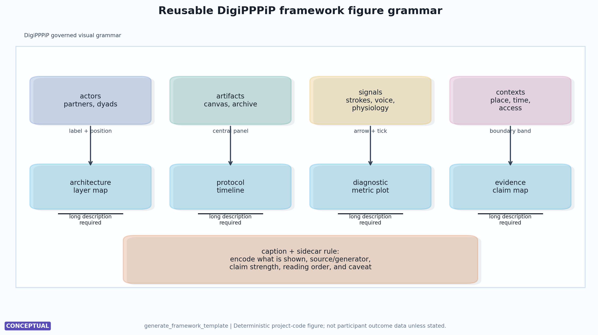
generate_framework_template(); read the upper
row as semantic roles, the small labels as non-color channels, the
middle row as reusable figure forms, and the lower box as the caption
and long-description rule applied throughout the manuscript. It supports
integrative consistency, not empirical validation, and future data
figures should keep the same claim-boundary discipline.16 Discussion: Limits, Failure Modes, and Future Replacement
DigiPPPiP belongs to the broader landscape of relational technology, but it takes a specific position within it. Many contemporary systems replace, simulate, or optimize social contact. DigiPPPiP instead uses technology to give two human partners another surface for mutual attention. That difference matters ethically: the goal is not frictionless engagement, retention, or automated companionship, but a bounded practice in which each partner can see and respond to the other’s agency.
The strongest scholarship added by the digital turn is not a single theory but a triangulation. CSCW explains why the shared drawing space is an interactional resource, with social translucence and workspace awareness providing sharper design constraints for what partner activity should become visible (Tang 1991; Erickson and Kellogg 2000; Gutwin and Greenberg 2002). Distance and grounding research explain why remote drawing needs evidence of understanding, repair, and re-entry rather than only a persistent file (Olson and Olson 2000; Clark and Brennan 1991). Presence and embodiment research explain why lightweight traces can carry felt co-presence without recreating the whole body (Lombard and Ditton 1997; Biocca 1997; Lee 2004). Digital-intimacy and relatedness-technology research explains why rituals, minimal signals, traces, and joint action matter for strong-tie relationships while also warning that many prototypes lack robust effect evidence (Kaye 2006; Hassenzahl et al. 2012; Neustaedter and Greenberg 2012; Vetere et al. 2005; McVeigh-Schultz and Baym 2015; Wenhart et al. 2025).
The same triangulation clarifies the risks. Persistent canvases can support shared memory only when contextual privacy, collective information practice, values-in-design, and dyadic boundary rules are explicit (Nissenbaum 2011; Palen and Dourish 2003; Dourish and Anderson 2006; Petronio and Child 2020; Shilton 2012). Emerging work on AI-mediated collaborative drawing in romantic relationships is relevant only if AI remains a reflective mediator rather than the relationship partner or the author of the shared gesture (Won et al. 2026). Companion-AI scholarship makes that boundary stronger: systems designed to satisfy companionship needs can raise replacement, social motivation, and social-skill concerns for human relationships, even when some users experience benefits (Malfacini 2025). Mixed-initiative and human-AI interaction scholarship therefore set a high bar: optionality, control, reversibility, disclosure, and recovery from wrong suggestions are not interface polish but conditions for preserving partner agency (Horvitz 1999; Deterding et al. 2017; Amershi et al. 2019). Hyperscanning and active inference supply testable measurement and modeling languages, but not automatic causal proof (Friston et al. 2017; Hamilton 2021).
The most important revision to the project brief is evidentiary discipline. The framework draws from hyperscanning, active inference, digital art therapy, neuroergonomics, phenomenology, relational aesthetics, and digital placemaking, but those literatures do not yet prove DigiPPPiP’s outcomes. The manuscript therefore phrases claims as design rationales and empirical hypotheses unless a cited source directly supports the narrower statement. The source-quality map in fig. 16 makes this discipline visible in the artifact itself.
The computational model also changes the manuscript’s posture. Rather than leaving abstract phrases such as “dyadic generative model” or “narrative entropy” as metaphors, the project implements small deterministic primitives and keeps them in sec. 19. Those primitives are intentionally modest. Their value is that they expose assumptions, make figures reproducible, and prevent quantitative claims from being invented in prose.
The first-principles review leaves only a small set of hard constraints: two people, a shared field of marks, perceivable agency, temporal structure, and accountable persistence. Most other elements are soft constraints or hypotheses. Digital capture, neural measurement, AI assistance, place tagging, and clinical translation are optional branches that must justify themselves against that small core. This makes the framework easier to test and harder to inflate.
The systems review adds a second discipline: every optional branch needs a feedback loop, a causal assumption, an ethics gate, and a reversal path. Without those pieces, the branch is not mature enough to carry manuscript claims. This is especially important for long-distance use, because a persistent surface can become useful, irrelevant, burdensome, or intrusive depending on the dyad’s actual uptake. It is also important for AI assistance, where reversibility and authorship clarity matter more than novelty.
The same restraint applies to health, intimacy, and accessibility. DigiPPPiP may become useful in dyadic digital-health or creative-arts contexts, but the current evidence supports only a research agenda and design rationale. Claims about treatment, relationship improvement, universal access, AI-supported insight, privacy-safe archives, or community-scale placemaking require study designs that directly measure those outcomes. The manuscript should therefore remain hospitable to future empirical replacement: the conceptual figures can be swapped for real data, but the claim-strength rules should stay.
The textosexual insight from PPPiP remains useful: relationships can be strengthened through shared marks, shared texts, and shared visual artifacts (Mikhailova and Friedman 2018). DigiPPPiP updates that insight for networked surfaces. The mark can now be simultaneous or delayed, local or remote, physical or digital, private or archived. The relational requirement is unchanged: partners must attend, respond, and co-author. If future studies show that ordinary shared drawing, video chat, or another low-friction activity produces the same outcomes with less complexity, DigiPPPiP should narrow to the contexts where its persistence, accessibility, place responsiveness, or event logging add specific value.
17 Case Studies: Dementia Care as a Stress Test
We illustrate the framework with one worked case study in dementia care. It is presented not as evidence of efficacy but as a boundary test: a setting chosen because it strains several of DigiPPPiP’s core assumptions rather than confirming them. Other applications (early-childhood dyads, long-distance couples, stroke rehabilitation) belong to the empirical program in sec. 14; here we develop the single case that most sharply exposes what the kernel does and does not guarantee.
17.1 Dementia Care: Asymmetric Dyads, Biographical Scaffolding, and Fluctuating Consent
DigiPPPiP’s minimum viable kernel (two partners, a shared mark field, perceptible traces of agency, and consentful control over persistence) maps onto dementia care dyads in ways that productively stress-test several of the framework’s core assumptions. The most important asymmetry is cognitive: where the framework presupposes two agents with roughly stable capacity to govern the shared archive, dementia introduces radical temporal asymmetry. The adult child experiences each session as one point in a longitudinal caregiving relationship; the parent may experience each session as the first. This does not invalidate the practice. There is substantial evidence that creative engagement can produce genuine moments of co-presence and recognition even when sustained narrative continuity is lost; however, it requires the consent and governance model to be substantially extended. Archive control cannot rest symmetrically with both partners when one partner’s capacity fluctuates within and across sessions. The framework’s default rule (when partners disagree, the less-disclosing option governs) is a useful starting point, but dementia care contexts require an explicit supported decision-making layer, drawing on bioethics literature on fluctuating consent capacity, that specifies who holds proxy governance, under what conditions, and with what reversibility.
The cyberphysical substrate takes on new meaning in this context. Rather than treating the shared canvas as a blank field for improvised mark-making, a dementia-oriented implementation can draw on biographical materials (family photographs, familiar places, recurring objects, handwriting samples) as persistent prompts embedded in the canvas. This is not merely an accessibility feature but a theoretically motivated reframing of what the shared surface is. Long-term autobiographical memory is often more intact than short-term memory in dementia, which means that a canvas seeded with recognizable materials from the parent’s past can function as a bridge between the child’s present and the parent’s accessible memory. The place-based micropractice framing is especially relevant here: the canvas becomes a relational micro-place constructed from biographical geography. A kitchen from forty years ago, a recurring holiday destination, or a childhood home can all serve as orienting triggers. Recurrence and shared uptake remain the minimum place claim; in this context they are satisfied when a familiar image, prompt, or outline reliably orients the parent toward a recognizable relational moment.
The temporal taxonomy requires reinterpretation rather than extension. Synchronous co-present sessions remain possible and valuable, particularly in early-stage dementia, but the semisynchronous and asynchronous modes acquire specific clinical relevance. An asynchronous canvas that the child adds to between visits, and that the parent encounters during a session with a care facilitator, preserves relational continuity across the gaps that dementia and caregiving schedules impose. The canvas in this mode functions less as a real-time communication channel and more as a persistent relational object that accumulates meaning across time. This is closer to a shared memory book than a messaging platform, but with the agency and mark-making properties that distinguish DigiPPPiP from passive reminiscence materials. The temporal primitive of repair acquires particular weight: moments where the parent reorients toward the shared surface after confusion, or where the child responds to an unexpected mark, carry relational significance that the event logging schema should be designed to capture without pathologizing disorientation as failure.
The neuroergonomic design constraint is sharpened considerably. The original principle that the interface should be nearly invisible becomes a clinical requirement in dementia contexts where cognitive load management is not a design preference but a condition of participation. Tool palettes, notifications, and navigational complexity are contraindicated. The minimum viable interface is a single shared surface with one input mode, familiar visual prompts, and no decisions required beyond the mark itself. Accessibility here is not only about motor input flexibility but about cognitive accessibility: plain-language prompts, low-distraction environments, and session structures short enough to remain within the participant’s attention window. The care facilitator becomes a legitimate third role in this context, supporting participation without substituting for it, and the governance model should specify the facilitator’s access to the canvas and event log separately from both partners.
The relational aesthetics claim that the artifact points back to the other person as an agent is both the most fragile and the most important aspect of this application. A canvas full of marks is not relational if one partner is merely producing output without awareness of the other’s presence. The honest boundary condition is that DigiPPPiP in dementia care settings cannot guarantee sustained mutual recognition, and should not be positioned as doing so. What it can offer is a structured occasion for moments of recognition: brief, genuine, and worth creating. Within a practice that asks very little in return, that is a modest claim. In the context of a condition that progressively forecloses relational possibility, it is not a small one.
18 Conclusions: Study-Ready Without Overclaiming
DigiPPPiP is a faithful extension of PPPiP and a substantive transformation of it. It preserves the central practice of making meaning together on a shared surface while expanding the possible substrates, timings, bodies, places, access needs, and measurement strategies. The framework is strongest when stated as a research program: a set of grounded hypotheses about how shared drawing can support human-human relational practice across cyberphysical conditions.
The project now expresses that program as a render-ready manuscript
and reproducible conceptual codebase. The paper uses automatic section,
figure, equation, and table references; the bibliography is centralized
in references.bib; the numbers that enter the manuscript
are generated through tested primitives and token hydration. Future
empirical work can replace the conceptual outputs with participant data
without changing the manuscript’s reference architecture, figure
registry, or source-quality discipline.
The result is intentionally bounded. DigiPPPiP is not presented as clinical treatment, proof of neural coupling, a universal accessibility solution, or an argument that AI improves intimate drawing. It is a structured way to design, log, visualize, and test a dyadic drawing practice whose core requirement remains simple: two partners attend to a shared surface and let the other’s mark matter. The most important future contribution will not be a more elaborate interface; it will be evidence that identifies when digital persistence, temporal flexibility, accessibility support, or place responsiveness actually strengthens that core relation.
19 Appendix: Free-Energy and Active-Inference Formalisms
This appendix holds the mathematical and diagnostic primitives used by the main manuscript. The consolidation is deliberate: active inference remains a modeling lens in the main line, while the formal details sit here where readers can inspect assumptions, generators, labels, and evidence boundaries together. The appendix draws on established active-inference and free-energy treatments (Friston 2010; Friston et al. 2017, 2023; Parr et al. 2022), discrete-state synthesis work (Da Costa et al. 2020), and interactional accounts of communication and second-person modeling (Vasil et al. 2020; Schilbach et al. 2013; Redcay and Schilbach 2019; Lehmann et al. 2024).
19.1 Event-to-Model Mapping
fig. 33 maps DigiPPPiP’s theoretical terms to observable design elements. Latent states are partner intentions, narrative states, and shared affect. Observations are strokes, pauses, utterances, and interface events. Policies are drawing, waiting, responding, and revising. The figure is included to prevent active inference from becoming decorative terminology: every model term has to be tied to a protocol event or dropped.

generate_active_inference_mapping(); read the columns as
latent states, observations, and policies, with arrows showing how
partner-conditioned beliefs can update through visible marks. It
supports the active-inference appendix by tying terms to measurable
protocol events. The mapping is conceptual; fitted parameters and
failed-baseline checks would be needed for mechanism
claims.19.2 Minimal Free-Energy Primitive
The project uses a Gaussian point-belief model as a minimal conceptual primitive. Variational free energy is:
\[ F(\mu)=\frac{1}{2}\pi_p(\mu-\mu_p)^2+\frac{1}{2}\pi_l(o-\mu)^2-\frac{1}{2}\log \pi_p-\frac{1}{2}\log \pi_l \qquad{(1)}\]
The expression in eq. 1 defines \(\mu\) as the current belief, \(\mu_p\) as the prior mean, \(o\) as the canvas observation, and \(\pi_p,\pi_l\) as the prior and likelihood
precisions. The analytic posterior mean used by
src/active_inference.py is:
\[ \mu^\ast=\frac{\pi_p\mu_p+\pi_l o}{\pi_p+\pi_l} \qquad{(2)}\]
In a coupled dyad, each partner’s previous posterior becomes part of the other’s next prior. fig. 34 contrasts that coupled case with a decoupled baseline. The terminal free-energy values from the deterministic conceptual run are -0.693147 and 0.061153, respectively; the absolute reduction is 0.7543. These are model outputs, not human-subject measurements.

generate_active_inference_loop() from
simulate_dyadic_session(). Read the solid and dashed lines
as toy-model baselines for reciprocal versus non-reciprocal prior
updating across mark steps. The plot supports the modeling argument that
coupling can be formalized, not that couples improve. Empirical
validation would require observed behavior and model-comparison
evidence.19.3 Hyperscanning and Network Geometry
Geometric hyperscanning is a candidate measurement vocabulary for empirical studies, not a shortcut to interpreting synchrony. Near-infrared spectroscopy (NIRS)-based cooperation studies and hyperscanning reviews motivate dyadic measurement (Cui et al. 2012; Czeszumski et al. 2020, 2022; Nam et al. 2020), yet shared stimulus timing, motion artifacts, physiology, task structure, preprocessing choices, and analytic windows can all inflate apparent coupling. Methodological cautions in fNIRS and hyperscanning warn against interpreting cross-brain coherence as direct evidence of shared minds, empathy, or relationship improvement (Tachtsidis and Scholkmann 2016; Hamilton 2021; Zimmermann et al. 2024). Translational hyperscanning arguments are valuable only when they remain close to applied contexts and family or dyadic care questions rather than treating synchrony as a generic marker of social quality (Provenzi et al. 2022). fig. 35 therefore separates acquisition, cleaning, windowing, synchrony estimation, graph construction, and curvature analysis before interpretation.

generate_network_analysis_pipeline(); read the
boxes left to right as acquisition, cleaning, windowing, synchrony
estimation, graph construction, and curvature analysis. It supports the
methods guardrail that signal processing precedes interpretation. The
pipeline is analytic scaffolding; actual studies must report exclusion
windows, preprocessing choices, and permutation controls.fig. 36 makes the alignment problem more concrete. Behavioral events, physiological channels, and exclusion windows must be synchronized before a study can ask whether a neural measure tracks co-drawing, repair, rupture, or co-regulation. The figure deliberately includes a shared artifact window to show how apparent coupling can arise from non-social signal contamination.

generate_hyperscanning_alignment() should be read
vertically: behavioral event windows, raw physiological channels with
shared artifacts, and cleaned channels after exclusion. It supports the
caution that synchrony claims require co-registration and artifact
handling. The signals are simulated; measured analyses would need
device-specific quality metrics and null models.For a simple unweighted inter-brain graph, the Forman-Ricci curvature used here is:
\[ \mathrm{Fr}(uv)=4-\deg(u)-\deg(v) \qquad{(3)}\]
The implementation uses Forman’s cell-complex curvature vocabulary and dynamic-network change-detection applications as method antecedents (Forman 2003; Weber et al. 2016). The curvature-entropy diagnostic in fig. 37 follows recent proposals to treat topological reconfiguration in inter-brain networks as a marker of affective phase transitions (Hinrichs et al. 2025). The conceptual run has maximum curvature entropy 2.4087 and detects 48 transition events under the configured threshold.

generate_geometric_hyperscanning_plot() from synthetic
network snapshots; read the red curve as curvature entropy and blue
points as candidate transitions. It supports the proposal that graph
diagnostics could mark rupture or repair windows. The figure is not
participant hyperscanning, and empirical use would require
artifact-robust network estimation.19.4 Narrative Information and Aesthetic Discovery
Narrative also fits the active-inference vocabulary. Narratives guide event segmentation, identity coherence, and policy selection (Bouizegarene et al. 2024; Veissière et al. 2020). In DigiPPPiP, a mark sequence can be treated as a symbolic trajectory with Shannon entropy and surprisal (Shannon 1948):
\[ H(X)=-\sum_i p(x_i)\log_2 p(x_i) \qquad{(4)}\]
The expected-information-gain arc used for aesthetic co-discovery is:
\[ \mathrm{EIG}(t)=c\,t\,e^{-\lambda t} \qquad{(5)}\]
fig. 38 and fig. 39 translate those commitments into inspectable conceptual plots. The configured alphabet supports a maximum entropy of 2.585 bits, and the epistemic arc peaks at model step 2.

generate_narrative_information_plot() from
src/narrative.py; read the upper panel as surprisal with
pivotal-moment markers and the lower panel as convergence toward a
repeated motif. It supports the narrative-information appendix by making
the entropy primitive inspectable. The sequence is synthetic, and
participant claims would require coded stroke alphabets and inter-rater
checks.
generate_epistemic_arc_plot() from
src/aesthetics.py; read the normalized curves as an
illustrative relation between curiosity, order, change, and the marked
“aha” peak. It supports the appendix’s modeling vocabulary. The plot is
conceptual, and validation would require event-aligned experience
reports or behavioral measures.Together, these equations function as a falsifiable grammar for future studies. They succeed only if they help specify what should be measured, what comparison would matter, and what result would count against the interpretation. A free-energy curve that improves only because of parameter choices, a synchrony measure that disappears after artifact controls, or an entropy score unrelated to participant reports would all narrow the framework rather than embarrass it.
20 References
Bibliography lives in manuscript/references.bib and is
resolved by Pandoc during rendering. All manuscript citations use
bracketed Pandoc syntax so the renderer, not the prose, controls
bibliography formatting and numbering.
Search tools and Perplexity are discovery aids only. A citekey should enter the manuscript only after the title, authors, year, venue, and DOI or stable URL have been checked against a DOI resolver, publisher page, PubMed, arXiv, Crossref, DataCite, official government page, official standards page, or archival record.